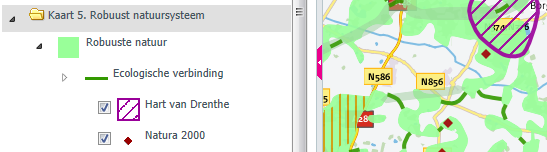
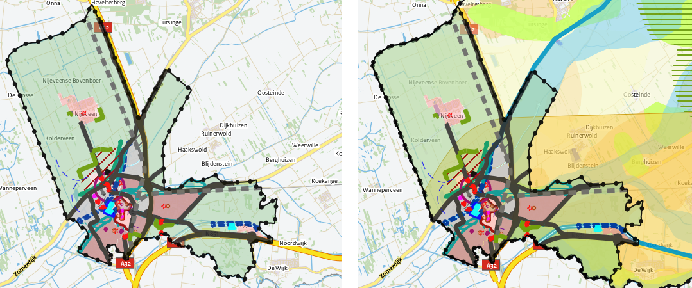
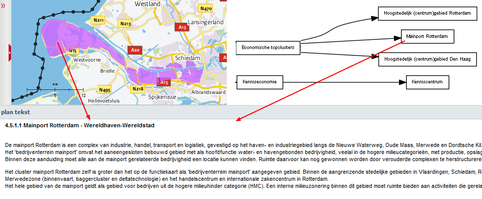
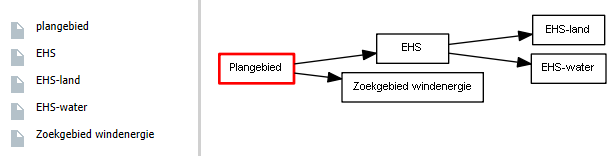
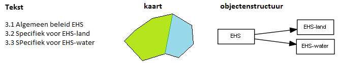
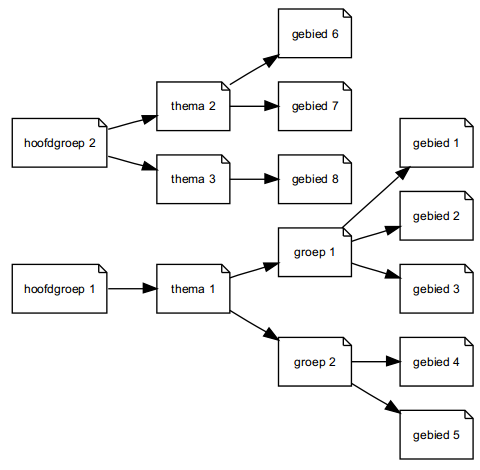

1. Een digitale structuurvisie?
In dit hoofdstuk gaan we in op de digitale structuurvisie. De mate van
‘digitaal’ heeft effect op de leesbaarheid en bruikbaarheid van de
structuurvisie. Eerst wordt ingegaan op de relatie van deze praktijkrichtlijn
met de andere onderdelen van de RO Standaarden en de Wet ruimtelijke ordening.
Tot slot is in de leeswijzer aangegeven hoe deze praktijkrichtlijn is ingedeeld.
1.1 Context van deze praktijkrichtlijn
In deze praktijkrichtlijn wordt de methode van digitalisering van het
ruimtelijke instrument ‘Structuurvisie’ beschreven. Hiermee wordt zowel de
gemeentelijke, provinciale als Rijksstructuurvisie bedoeld.
Deze praktijkrichtlijn is net als de andere praktijkrichtlijnen onder de RO
Standaarden een toelichting op de verplicht te gebruiken normen Informatiemodel
Ruimtelijke Ordening IMRO2012 en Standaard Toegankelijkheid Ruimtelijke
Instrumenten SVBP2012.
Het verschil met de andere praktijkrichtlijnen is dat deze praktijkrichtlijn de
maker van de structuurvisie meer bij de hand neemt daar waar de andere
praktijkrichtlijnen gericht zijn op de uitleg van de techniek. Dit komt tot
uiting door bijvoorbeeld een stappenplan en meer context voor het objectgericht
werken met een structuurvisie. Deze werkwijze kan zorgen voor een verhoogde
leesbaarheid en bruikbaarheid van de structuurvisie.
Wettelijk kader
Sinds 1 januari 2010 kent de Wet ruimtelijke ordening (Wro) voor structuurvisies
de digitaliseringsverplichting. In het Besluit ruimtelijke ordening (Bro)
zijn de uitgangspunten van digitalisering nader uitgewerkt. Via de Regeling
standaarden ruimtelijke ordening wordt bepaald dat bij de
digitalisering van ruimtelijke instrumenten zoals de structuurvisie gebruik moet
worden gemaakt van IMRO2012. Dit informatiemodel is de standaard voor de
beschrijving en codering van ruimtelijke instrumenten.
1.2 Kan het ook anders?
De objectgerichte werkwijze bij het maken van een structuurvisie, die in deze
praktijkrichtlijn wordt uitgelegd, is gelet op de vele voordelen de meest
wenselijke, maar is niet de enige manier om een structuurvisie te maken. De norm
IMRO2012 laat technisch gezien ook andere werkwijzen toe. Een voorbeeld van zo’n
alternatieve werkwijze is een Structuurvisie die bestaat uit de volgende twee
objecten:
- het object StructuurvisiePlangebied die het gebied aangeeft waarvoor de structuurvisie geldt, met daaraan gekoppeld de gehele plantekst in pdf-formaat;
- het object StructuurvisieGebied. IMRO2012 schrijft voor dat behalve het
object StructuurvisiePlangebied ook het object StructuurvisieGebied minimaal
eenmaal voorkomt in het plan. Het meest eenvoudige is om dit object qua
begrenzing gelijk te houden aan het object StructuurvisiePlangebied en ook
hieraan dezelfde gehele plantekst als pdf te koppelen.
Deze praktijkrichtlijn richt zich op de objectgerichte structuurvisie die in de
volgende paragraaf verder wordt toegelicht.
1.3 Wat is een objectgerichte structuurvisie?
Het instrument Structuurvisie
Ten behoeve van een goede ruimtelijke ordening worden voor het gehele
grondgebied van de gemeente, provincie of het Rijk één of meer structuurvisies
vastgesteld waarin de hoofdzaken van het te voeren ruimtelijk beleid zijn
vastgelegd.
Objectgerichte structuurvisie
Een structuurvisie bestaat uit tekst en geografische aanduidingen. Per
geografische aanduiding kan worden aangegeven welke kleur deze moet krijgen.
Door één of meerdere verzamelingen van geografische aanduidingen in de visie
samen af te beelden, ontstaan één of meerdere digitale kaarten.
Door de teksten in zelfstandige onderdelen op te knippen en te koppelen aan
bijbehorende geografische aanduidingen, ontstaat interactie tussen de tekst en
de kaart. We spreken dan van een objectgerichte structuurvisie. In paragraaf 2.2
wordt ingegaan op deze zelfstandige onderdelen die de interactie tussen tekst en
kaart mogelijk maken. De onderlinge samenhang tussen deze zelfstandige
onderdelen vormt als het ware het ‘cement’ van de structuurvisie en wordt
objectenstructuur genoemd. Dit wordt nader toegelicht in paragraaf 2.3.
Kortom een objectgerichte structuurvisie bestaat uit de volgende drie
onderdelen:
- tekst, geordend door een inhoudsopgave (zie Figuur 1);
- geometrie (meestal door de opsteller gegroepeerd in een of meerdere kaarten, geordend door een legenda per kaart (zie Figuur 2);
- de zelfstandige onderdelen van de objectgerichte structuurvisie, geordend in een objectenstructuur die dit alles bij elkaar houdt (zie Figuur 3).
 Figuur 1 Inhoudsopgave
Figuur 1 Inhoudsopgave

Figuur 2 Legenda
 Figuur 3 Objectenstructuur
Figuur 3 Objectenstructuur
1.4 Waarom een objectgerichte structuurvisie?
Een objectgerichte structuurvisie kenmerkt zich door integratie tussen tekst en
kaart. Dit leidt tot:
- betere leesbaarheid van de structuurvisie;
- betere bruikbaarheid van de structuurvisie in het werkproces;
- betere kwaliteitscontrole tijdens het opstellen.
Betere leesbaarheid
Doordat in een objectgerichte structuurvisie tekst waar mogelijk aan thema’s
en/of gebieden is gekoppeld, is het voor de gebruiker makkelijk te achterhalen
waar welk beleid over welk thema geldt. De gebruiker hoeft niet de integrale
tekst door te lezen om tot voor hem of haar relevante beleid te komen. Hierbij
biedt vervolgens de aangebrachte indeling houvast bij het lezen. De visie wordt
hiermee toegankelijker.
Betere bruikbaarheid
De bruikbaarheid van de informatie heeft betrekking op de wijze waarop
informatie uit de structuurvisie makkelijk opgenomen kan worden in
informatiesystemen, en daarmee combineerbaar en vergelijkbaar is met andere
informatie, zoals andere structuurvisies, bestemmingsplannen, provinciale
verordeningen en AMvB's. Daarnaast kan in zo'n geografisch informatiesysteem ook
een combinatie worden gemaakt met andere relevante geografische gegevens zoals
allerlei sociaal-economische kenmerken van de bevolking of
bereikbaarheidsgegevens. Hiermee kan de consistentie van het ruimtelijk beleid
tussen de verschillende bestuurslagen, maar ook de consistentie tussen de
verschillende instrumenten ingezet binnen een bestuurslaag, eenvoudiger worden
gecontroleerd en bewaakt.

Figuur 4 Structuurvisie Meppel zonder (links) en met (rechts) de
Structuurvisie provincie Drenthe
Een objectgerichte structuurvisie vergemakkelijkt het samenwerken, bijvoorbeeld
in de RO-keten, doordat de bestuurlijke partners of samenwerkingsorganisaties de
structuurvisie kunnen inlezen in hun geografische informatie systemen. Dit komt
doorwerking van het ruimtelijk beleid ten goede.
Tenslotte maakt een objectgerichte structuurvisie het makkelijk om onderdelen
opnieuw te gebruiken of te gebruiken als referentie bij het opstellen van andere
RO-instrumenten zoals verordeningen en bestemmingsplannen. Dit komt de
beleidsconsistentie en doorwerking van het ruimtelijk beleid ten goede.
Betere kwaliteitscontrole
De objecten in een structuurvisie zijn een ideaal hulpmiddel om bij het
opstellen van de structuurvisie de taken te verdelen over een schrijversteam uit
verschillende disciplines zoals natuur, water en cultuurhistorie. Doordat vanaf
het begin al wordt nagedacht over de verschillende onderdelen in de tekst en op
de kaart en hun onderlinge samenhang, worden eventuele strijdigheden sneller
opgespoord.
De ervaring leert dat structuurvisies door dit extra vangnet duidelijker worden.
Gebruik van PDF-bestanden
Indien er PDF-bestanden worden gebruikt in een planset dan is het beter om PDF-
bestanden te gebruiken die geen flashcomponenten bevatten. Bestanden met
flashcomponenten kunnen om veiligheidsredenen niet meer in een webbrowser worden
geopend waardoor de PDF-bestanden bij raadpleging van Ruimtelijkeplannen.nl geen
inhoud bevatten.
Controleer daarom vóór publicatie dat uw PDF-documenten geen Flashcomponenten
bevatten.
1.5 Leeswijzer
De opbouw van deze praktijkrichtlijn is anders dan de andere praktijkrichtlijnen
onder de RO Standaarden. In deze praktijkrichtlijn is de toelichting op de norm
IMRO gegeven in hoofdstuk 5. In dit hoofdstuk 1 is aangegeven welke informatie
verplicht is op te nemen in de digitale structuurvisie.
Verder kent deze praktijkrichtlijn de opbouw die maken van een structuurvisie
volgt. In hoofdstuk 2 wordt de structuur van objecten toegelicht en wordt
ingegaan op de eigenschappen en mogelijkheden van de objecten. Vervolgens is het
maken van de plantekst in hoofdstuk 3 toegelicht en hoofdstuk 4 gewijd aan het
maken van de kaarten. De technische toelichting op de norm is in hoofdstuk 5
opgenomen.
Er is een vijftal bijlagen opgenomen bij deze praktijkrichtlijn:
- In bijlage 1 zijn een aantal veel gestelde vragen rondom deze praktijk en
structuurvisies algemeen opgenomen;
- In bijlage 2 zijn voor de weergave in de kaart een aantal voorbeelden van
vlakken. Dit is op basis van de symbool codelijst;
- Bijlage 3 licht toe de werkwijze toe van een gedeeltelijke herziening van
een structuurvisie;
- Bijlage 4 is gewijd aan de versie “geconsolideerd” ;
- Tot slot is in bijlage 5 een invulhulp opgenomen.
Deze praktijkrichtlijn en alle andere onderdelen van de RO Standaarden zijn vindbaar en raadpleegbaar via de Geonovum website, dossier RO Standaarden.
2. De planobjecten en hun onderlinge relaties
Om de praktijkrichtlijnen van de RO Standaarden onderling vergelijkbaar te
houden, wordt de term ‘planobject’ behalve voor plannen ook voor besluiten en
visies gehanteerd. In dit hoofdstuk de structuur die wordt aangebracht in de
structuurvisie toegelicht.
2.1 Wat zijn planobjecten?
In deze praktijkrichtlijn wordt gebruikt gemaakt van de term planobject:
Een planobject is een zelfstandig, logisch onderdeel in het plan waarvan de
planopsteller wil dat deze via verschillende ingangen toegankelijk is voor de
gebruiker.
Het desbetreffende planobject is dus niet alleen via de tekstuele ingang
toegankelijk, maar kan ook via de kaart of via andere ingang (bijvoorbeeld via
de objectenstructuur) gevonden worden. De termen ‘zelfstandig logisch onderdeel
in de tekst’ en ‘via verschillende ingangen toegankelijk’ worden respectievelijk
in paragraaf 2.1.1 en paragraaf 2.1.2 nader toegelicht.
2.1.1 Zelfstandig, logisch onderdeel in de tekst
In Figuur 5 is een voorbeeld van een plantekst opgenomen, bestaande uit twee
zelfstandige, logische onderdelen (werkgelegenheid en aard van
bedrijvenbestand).
 Figuur 5 Zelfstandig, logisch onderdeel in de tekst
Figuur 5 Zelfstandig, logisch onderdeel in de tekst
2.1.2 Via verschillende ingangen toegankelijk
Het is aan de opsteller van de structuurvisie om te bepalen welke onderdelen van
de tekst van de structuurvisie zowel via de tekstuele ingang als via andere
ingangen toegankelijk dienen te zijn. Het ligt voor de hand dat de planopsteller
bijvoorbeeld het tekstuele onderdeel ‘Voorwoord’ alleen via de tekstuele ingang
en niet via de kaart toegankelijk maakt. Dit wil niet zeggen dat deze tekst dan
verdwijnt. Via de tekstuele ingang is het voorwoord altijd weer terug te vinden.
De praktijk leert dat met name onderdelen uit het thematische en uit het
gebiedsgerichte deel van de plantekst via meerdere ingangen worden ontsloten en
dus worden bestempeld als planobjecten. Voorbeelden van andere ingangen zijn via
de kaart of via een objectenstructuur. In Figuur 6 is een voorbeeld opgenomen
waarbij de plantekst zowel via de kaart als via een objectenstructuur wordt
opgeroepen.

Figuur 6 Tekst via verschillende ingangen toegankelijk
2.2 Objectenstructuur
2.2.1 Wat is een objectenstructuur?
Een structuurvisie kan uit een groot aantal planobjecten bestaan en deze staan
niet op zich zelf. Sommige groepjes planobjecten hebben een inhoudelijke relatie
met elkaar. Het ligt het voor de hand deze objecten te groeperen in grotere
logische eenheden. Zo ontstaat een structuur in de planobjecten: een
objectenstructuur (zie Figuur 7).

Figuur 7 Planobjecten ongeordend (links) en geordend in een objectenstructuur
(rechts)
Het enige planobject op het hoogste niveau in de objectenstructuur is altijd het
plangebied. Dit planobject heeft als naam de aanhaaltitel van de structuurvisie,
als tekst de gehele plantekst en als geografische aanduiding het gebied waar de
structuurvisie over gaat.
Let op: dit gebied kan nooit groter zijn dan het gebied waar de opsteller van
de structuurvisie bevoegd gezag is.
2.2.2 Wat betekent een verbinding in de objectenstructuur?
Voor alle planobjecten die onder een ander planobject hangen in de
objectenstructuur geldt dat de teksten die van toepassing zijn op het
bovenliggende planobject ook van toepassing zijn op het onderliggende
planobject. Op deze wijze kunnen de teksten die bij onderliggende planobjecten
horen, beter in de context worden geplaatst. Dit wordt geïllustreerd aan de hand
van het voorbeeld in Figuur 8.
In dit voorbeeld bestaat de tekst uit drie zelfstandige logische onderdelen,
namelijk paragraaf 3.1 (EHS), 3.2 (EHS-land) en 3.3 (EHS-water). De
planopsteller wil deze 3 onderdelen zowel via de tekstuele ingang als via de
kaart ontsluiten en ze worden daarom beschouwd als planobjecten.
Twee planobjecten (EHS-land en EHS-water) worden geografisch aangeduid
(respectievelijk met groen en blauw). In de objectenstructuur is aangegeven dat
het planobject EHS als onderliggende objecten EHS-land en EHS-water kent.

Figuur 8 Overerving
Als op het groene deel van de kaart wordt geklikt, wordt het planobject
‘EHS-land’ gevonden met daarbij de volgende verwijzingen naar tekst:
- 3.1 algemeen beleid EHS
- 3.2 Specifiek voor EHS-land
Als op het blauwe deel van de kaart wordt geklikt, wordt het planobject
‘EHS-water’ gevonden met daarbij de volgende verwijzingen naar tekst:
- 3.1 algemeen beleid EHS
- 3.3 Specifiek voor EHS-water
Uit dit voorbeeld komt het principe van overerving naar voren. Zowel het
planobject EHS-land als EHS-water erven de verwijzing naar tekst van het
bovenliggende object (EHS) over, namelijk paragraaf ‘3.1 Algemeen beleid EHS’.
De kind-planobjecten kennen meestal eigen geografische aanduiding. Meestal zal
dit geografisch gebied vallen binnen het geografisch gebied van het
bovenliggende (moeder-)planobject. Dit hoeft echter niet.
Indien een kind-planobject geen duidelijke geografische aanduiding kent, dan kan
een gebruiker aannemen dat de geografische aanduiding van het moeder-planobject
van toepassing is. Het heeft echter de voorkeur om waar mogelijk een duidelijke
geografische aanduiding op te nemen.
2.3 Objectenstructuur versus inhoudsopgave en kaartlegenda
De objectenstructuur vormt het cement van een structuurvisie en groepeert de
planobjecten die op hun beurt zorgen voor de integratie tussen de teksten en
kaarten. De tekst en kaart(en) kennen ook hun eigen indeling, namelijk de
inhoudsopgave en kaartlegenda.
Het staat de opstellers van de structuurvisie vrij om de indeling van de
planobjecten (objectenstructuur), de indeling van de tekst (inhoudsopgave) en de
indeling van de kaarten (legenda) naar eigen inzicht op te stellen. Deze drie
indelingen zullen nooit exact gelijk zijn, alleen al vanwege het feit dat alle
planobjecten wel in de tekst, maar niet op de kaart hoeven voor te komen.
Wel is het zo dat hoe meer deze indelingen op elkaar lijken, des te beter
raadpleegbaar de structuurvisie wordt. Immers het integreren van tekst en kaart
zal bij een structuurvisie waarbij de inhoudsopgave gelijkenis vertoont met de
indeling van de legenda van de kaarten, gemakkelijker gaan dan bij een
structuurvisie waarin de inhoudsopgave sterk verschilt van de kaartlegenda. Voor
elke nieuwe structuurvisie kan een nieuwe, logische indeling gekozen worden.
Wanneer een structuurvisie een partiële herziening of een uitwerking is van een
eerdere structuurvisie is het handig een indeling te kiezen die past bij de
oorspronkelijke structuurvisie.
2.4 De eigenschappen van planobjecten
Voor veel planobjecten zal gelden dat deze betrekking hebben op een bepaald
gebied en dus op een kaart zullen voorkomen. Ook is het mogelijk dat een
planobject op meerdere kaarten voorkomt (bijvoorbeeld op de visiekaart en op een
thematische kaart). Of anders verwoord: het planobject heeft als eigenschap
meerdere verwijzingen naar kaarten.
Er zijn echter ook planobjecten die wel in de tekst maar niet op de kaart
voorkomen. Deze hebben dus als eigenschap een verwijzing naar de tekst, maar
kennen geen verwijzing naar de kaart: objecten zonder verwijzing naar de kaart, ofwel objecten zonder geometrie,
zijn alleen mogelijk bij rijksstructuurvisies.
Teksten van deze planobjecten kunnen op de volgende manieren worden opgeroepen:
- via de tekstuele ingang;
- via de objectenstructuur (zie Figuur 7);
- indirect via een onderliggend planobject dat wel op de kaart staat. Via
overerving erft het onderliggende planobject de teksten over van dit
planobject, zie paragraaf 2.2.2.
Meestal zal een planobject op meerdere plekken in de tekst worden beschreven
(bijvoorbeeld in het thematische deel en in het gebiedsgerichte deel). Het
planobject heeft dan als eigenschap meerdere verwijzingen naar de tekst.
Samenvattend: een planobject bevat altijd een verwijzing naar één of meerdere
teksten en kan (hoeft niet) een verwijzing naar één of meerdere kaarten
bevatten (zie Figuur 9).
 Figuur 9 Eigenschappen van planobjecten
Figuur 9 Eigenschappen van planobjecten
Naast een verwijzing naar de tekst of naar één of meerdere kaarten,
kunnen/moeten er voor een planobject nog meer eigenschappen worden vastgelegd,
zoals thema, belang, rol en instrument. Door het invullen van deze
eigenschappen, wordt de bruikbaarheid van de structuurvisie vergroot. De
gebruiker kan dan bijvoorbeeld alle planobjecten selecteren die behoren tot het
thema ‘natuur’.
2.5 Werkwijze opstellen objectgerichte structuurvisie
In deze paragraaf wordt een eenduidige werkwijze beschreven om een
objectgerichte structuurvisie inhoudelijk goed op te zetten. Er zijn echter meer
manieren mogelijk.
2.5.1 Stap 1: Opstellen concept objectenstructuur
Stap 1A en 1B kunnen ook in omgekeerde volgorde worden uitgevoerd.
Stap 1A - Thema’s
Benoem de thema’s die in de structuurvisie aan de orde komen (geef ze namen) en
beschrijf de inhoud met enkele steekwoorden. Maak hierbij gebruik van de
themalijst. Dit resulteert in de eerste planobjecten van de structuurvisie.
Stap 1B - Gebieden
Geef alle gebieden waarvoor beleid wordt gemaakt (of die ter toelichting dienen
op het beleid) aan op de kaart. Geef die gebieden namen en beschrijf het beleid
met enkele steekwoorden.
Stap 1C - Koppelen gebieden aan thema’s
Deel de gebieden uit stap 1B toe aan de thema’s uit stap 1A. Een gebied kan bij
meer thema's horen. Hierdoor ontstaat een eerste versie van de
objectenstructuur.
Stap 1D - Groeperen van planobjecten
Verzamel planobjecten in groepen die beleid met elkaar gemeen hebben zodat
algemenere beleidsuitspraken in die groepen ook kunnen gelden voor de
onderliggende objecten. Beschouw deze groepen ook weer als planobjecten en geef
deze unieke namen. De objectenstructuur is nu nog verder gegroeid.
Benoem het beleid in enkele steekwoorden (eventueel via verwijzingen naar al
geschreven teksten) en bepaal of er sprake is van een begrenzing door middel van
een omschrijving of een weergave op kaart.
Vaak is het handig om in stap 1C en 1D te werken met een schematische weergave
in blokjes zoals in Figuur 10 (gebruik daarbij sprekende namen in plaats van
“thema 2” of gebied 4”).

Figuur 10 Groeperen in planobjecten
Op deze wijze ontstaat de eerste globale versie van de objectenstructuur die als
startpunt wordt gebruikt voor zowel het opstellen van de eerste teksten als het
maken van de eerste kaart(en). Het spreekt voor zich dat er een wisselwerking is
tussen het schrijven van teksten, het opstellen van de kaarten en het opstellen
van de objectenstructuur.
2.5.2 Stap 2: Opstellen concept inhoudsopgave en de eerste teksten
Schrijf vervolgens alle teksten die horen bij de planobjecten, en zet vervolgens
die teksten op een logische volgorde zodat er een lopende tekst ontstaat: de
tekst van de digitale structuurvisie.
Vaak verandert gedurende het schrijfproces de inhoud van een structuurvisie en
daarmee ook de bij de planobjecten horende teksten. Dit komt mede doordat
tijdens het schrijven het beleid wordt aangescherpt. Vaak is het bij zo'n
wijzigende tekst nodig om de objectenstructuur aan te passen en/ of de
geografische duiding van de objecten. Voor meer informatie over het opstellen
van de teksten, zie hoofdstuk 3.
2.5.3 Stap 3: Opstellen concept kaart(en)
Groepeer de planobjecten met een geografische aanduiding in één of meerdere
kaarten en kies de gebruikte symbolen en kleuren.
Wat is een kaart?
In een digitale structuurvisie wordt met de term ‘kaart’ bedoeld de verzameling planobjecten waarvan de planopsteller wil dat deze samen worden getoond.
Let op: de verbeeldingsmogelijkheden (kaartkleuren en symbolen) van digitale
structuurvisies zijn relatief beperkt. Wel is het mogelijk om een geheel
transparante kleur mee te geven. Hierdoor wordt het planobject wel gevonden als
op de kaart wordt geklikt, maar is het niet zichtbaar. Dit is met name handig
voor planobjecten waarvan de begrenzing zeer gevoelig ligt, maar die men toch
wil opnemen op de kaart.
Let wel: een gebruiker die de structuurvisie inleest in een geografisch
informatiesysteem ziet de begrenzing natuurlijk zoals hij of zij dat zelf wil.
Voor meer informatie over het opstellen van de kaarten, zie hoofdstuk 4.
2.5.4 Stap 4: Bepalen type van ieder planobject
Omdat planobjecten heel verschillend kunnen zijn, dient eerst te worden bepaald
tot welk type (ook wel klasse genoemd) een bepaald planobject behoort. Per type
(klasse) is aangegeven welke eigenschappen moeten/mogen worden ingevuld. Het
gaat hierbij om eigenschappen zoals thema, belang, rol en instrument.
In bijlage 5 is een vragenlijst opgenomen waarmee kan worden bepaald tot welk
type (klasse) een bepaald planobject uit de objectenstructuur behoort. Om de
werking van deze vragenlijst toe te lichten, is deze toegepast op het voorbeeld
in Figuur 11. Het voorbeeld betreft een provinciale structuurvisie.
 Figuur 11 Voorbeeld objectenstructuur
Figuur 11 Voorbeeld objectenstructuur
In Tabel 1 zijn voor ieder object alle vragen uit de vragenlijst van de
invulhulp van bijlage 5 opgenomen.
Toepassing vragenlijst uit Bijlage 5Planobject | Toelichting | Vragenlijst | Type (klasse) |
|---|
EHS | Betreft beleidstekst. Het planobject wordt geografisch aangeduid. | vraag 1: JA vraag 2: JA vraag 3: JA | Structuurvisiecomplex. invulariant A |
Duurzaamheid | Betreft beleidstekst. Het planobject wordt niet geografisch aangeduid en ook niet als kopje in de legenda opgenomen. | vraag 1: JA vraag 2: JA vraag 3: NEE vraag 4: NEE | Structuurvisiecomplex, invulvariant C |
Verkeer | Betreft beleidstekst. Het planobject wordt niet geografisch aangeduid en ook niet als kopje in de legenda opgenomen. | vraag 1: JA vraag 2: JA vraag 3: NEE vraag 4: NEE | Structuurvisiecomplex, invulvariant C |
EHS-land | Betreft beleidstekst. Het planobject wordt geografisch aangeduid. | vraag 1: JA vraag 2: NEE vraag 5: JA | Structuurvisiegebied, invulvariant A |
EHS-water | Betreft beleidstekst. Het planobject wordt geografisch aangeduid. | vraag 1: JA vraag 2: NEE vraag 5: JA | Structuurvisiegebied, invulvariant A |
Windenergie | Betreft beleidstekst. Het planobject wordt niet geografisch aangeduid en ook niet als kopje in de legenda opgenomen. | vraag 1: JA vraag 2: JA vraag 3: NEE vraag 4: NEE | Structuurvisiecomplex, invulvariant C |
Zonne-energie | Betreft beleidstekst. Het planobject wordt niet geografisch aangeduid en ook niet als kopje in de legenda opgenomen. | vraag 1: JA vraag 2: NEE vraag 5: NEE vraag 6: NEE | Niet te coderen |
Doorstroming | Betreft beleidstekst. Het planobject wordt niet geografisch aangeduid en ook niet als kopje in de legenda opgenomen. | vraag 1: JA vraag 2: NEE vraag 5: NEE vraag 6: NEE | Niet te coderen |
Zoekgebied windenergie | Betreft beleidstekst. Het planobject wordt geografisch aangeduid. | vraag 1: JA vraag 2: NEE vraag 5: JA | Structuurvisiegebied, invulvariant A |
2.5.5 Stap 5: Afronden van de tekst
Voeg overige teksten toe als voorwoord, begrippenlijst, etc. Deze teksten hoeven
niet aan een van de objecten uit voorgaande stappen te worden toegevoegd. Ze
horen 'vanzelf' bij het plan. Pas wel op dat er geen beleid staat in een van die
teksten, want dan hoort zo'n tekst wel bij een van de objecten. Neem ook nog
alle plaatjes op. Benoem de relaties met overige plannen.
2.5.6 Stap 6: Controle
Uit stap 4 kan volgen dat sommige planobjecten niet kunnen worden gecodeerd. In
het voorbeeld in Figuur 12 zijn deze geel weergegeven.
 Figuur 12 Planobjecten die niet kunnen worden gecodeerd
Figuur 12 Planobjecten die niet kunnen worden gecodeerd
Verwijder deze planobjecten uit de objectenstructuur. Zorg er wel voor dat de
teksten van de verwijderde objecten bij een ander (meestal bovenliggend) object
terecht komen.
Bekijk vervolgens of er planobjecten voorkomen die behoren tot het type
Structuurvisiecomplex A, B, C, D, E of F (zie bijlage 5) en geen
onderliggende planobjecten hebben. In het voorbeeld gaat het om het object
‘verkeer’ (in Figuur 13 in groen weergegeven). Omdat alle onderliggende objecten
onder dit object zijn verwijderd, dient voor dit object opnieuw te worden
bepaald tot welk type deze behoort (zie Tabel 2).
 Figuur 13 Planobjecten van het type Structuurvisiecomplex zonder onderliggende planobjecten
Figuur 13 Planobjecten van het type Structuurvisiecomplex zonder onderliggende planobjecten
In Tabel 2 zijn voor ieder object alle vragen uit de vragenlijst van de
invulhulp van Bijlage 5 opgenomen.
Doorlopen stappen in het stappenplan uit Bijlage 5Planobject | Toelichting | Vragenlijst | Type (klasse) |
|---|
Verkeer | Betreft beleidstekst. Het planobject wordt niet geografisch aangeduid en ook niet als kopje in de legenda opgenomen | vraag 1: JA vraag 2: NEE vraag 5: NEE vraag 6: NEE | Niet te coderen |
Omdat het object ‘verkeer’ niet te coderen is, wordt deze ook verwijderd. Kijk
wederom of er planobjecten voorkomen van het type Structuurvisiecomplex A, B, C,
D, E of F zonder onderliggende planobjecten. Herhaal dit totdat deze niet meer
voorkomen.
Daarnaast is het aan te bevelen om de uiteindelijke structuur van het plan goed
te controleren. Een van de hulpmiddelen daarbij is om een planobject te nemen,
en dan alle tekst te lezen van dat object en alle bovenliggende planobjecten.
Dan moet, vanwege het principe van overerving (zie paragraaf 2.2.2) alle voor
dat van planobject van toepassing zijnde beleid (en eventuele toelichting op dit
beleid) zijn gelezen. Is dat niet het geval, dan klopt de structuur niet.
Herhaal deze test een aantal malen voor verschillende planobjecten.
2.6 Resultaat
Zoals aangegeven in paragraaf 1.3 bestaat een objectgerichte structuurvisie uit
drie onderdelen:
- tekst, geordend door een inhoudsopgave;
- geometrie (meestal door de opsteller gegroepeerd in een of meerdere kaarten, geordend door een legenda per kaart);
- de zelfstandige onderdelen van de objectgerichte structuurvisie, geordend in een objectenstructuur die dit alles bij elkaar houdt.
Volgens de Standaard Toegankelijkheid Ruimtelijke Instrumenten (STRI2012)
dient de geometrie en de objectenstructuur samen in één bestand in gml-formaat
ter beschikking te worden gesteld. Voor het beschikbaar stellen van de teksten
biedt de STRI2012 de volgende twee opties toegestaan:
Mogelijkheid 1: xml-formaat
In deze optie wordt de tekst beschikbaar gesteld conform het Informatiemodel Ruimtelijke Ordening Planteksten 2012 (IMROPT2012). Dit betekent dat in
ieder geval de regels, de toelichting en/of het beleids-/besluitdocument
beschikbaar worden gesteld in XML formaat. Bijlagen kunnen ofwel in dit zelfde
XML formaat beschikbaar worden gesteld, ofwel in separate bronbestanden in
HTML-, XHTML- of PDF-formaat.
Mogelijkheid 2: html-formaat
In deze optie wordt de tekst in HTML-, XHTML- of PDF-formaat beschikbaar
gesteld.
Voordeel van de eerste optie (xml-formaat) is dat ‘de computer’ van ieder
tekstobject weet waar deze begint en eindigt. Het is hierdoor mogelijk om in
viewers bepaalde tekstobjecten te selecteren of ‘highlighten’ (te markeren met
een bepaalde kleur). Dit is met planteksten in html-formaat niet mogelijk.
Het resultaat vormt een set van bestanden (zie (zie hoofdstuk 2
van de STRI2012) die langs elektronische weg beschikbaar dienen te worden gesteld (zie hoofdstuk 5
van de STRI2012).
5. De planobjecten en hun eigenschappen
In dit hoofdstuk worden de klassen (objecttypen) met bijbehorende attributen
beschreven. Elk object binnen een klasse kent eigenschappen die als attribuut
daaraan worden toegekend. In IMRO2012 is in het UML-schema weergegeven hoe de
objecten (klassen) samenhangen en welke attributen mogelijk zijn. In Bijlage 5
is een stappenplan opgenomen aan de hand waarvan u kunt bepalen welke klasse en
welke attributen u dient in te vullen. Waar mogelijk zijn een aantal attributen
al ingevuld of juist weggelaten.
De objecttypen van de structuurvisie worden per paragraaf beschreven:
Tot slot wordt in paragraaf 5.5 metadata toegelicht.
5.1 Klasse Structuurvisieplangebied
Het enige planobject op het hoogste niveau in de objectenstructuur behoort
altijd tot de klasse ‘Structuurvisieplangebied’. In Tabel 5 zijn voor deze
klasse de attributen benoemd, de waarden aangegeven die deze attributen moeten
bevatten en is aangegeven of het gebruik van het attribuut verplicht is en of
het attribuut meerdere malen mag worden gebruikt.
Let op: dit kan verschillen tussen Rijk, provincie en gemeente. Daarom is,
waar dit van toepassing is, voor het Rijk (zie kolom R), de provincie (zie kolom
P) en de gemeente (zie kolom G) afzonderlijk weergegeven. Ook is aangegeven of
attributen in samenhang moeten worden gebruikt (samengesteld attribuut). Na de
tabel is per attribuut een nadere beschrijving gegeven.
Klasse StructuurvisieplangebiedAttribuut | waarde | R | P | G | nadere omschrijving waarde |
|---|
identificatie: | NEN3610ID | 1 | samengesteld attribuut. Uit de combinatie hiervan wordt de bestandsnaam van het plan opgebouwd conform STRI2012: namespace.lokaalID-versie |
NEN3610ID | namespace | waarde | 1 | Unieke verwijzing naar een registratie van objecten. Voor IMRO objecten is dat ‘NL.IMRO’ |
lokaalID | waarde | 1 | Unieke identificatiecode binnen een registratie. Bestaande uit een bronhouderscode van 4 cijfers gevolgd door een punt (.) en maximaal 18 alfanumerieke tekens. |
versie | waarde | 1 | Versie-aanduiding van het plangebied bestaande uit 4 alfanumerieke tekens |
typePlan | structuurvisie | 1 | vaste waarde volgens domein RuimtelijkPlanOfBesluit_SV |
BeleidsmatigVerantwoordelijkeOverheid | nationale overheid provinciale overheid gemeentelijke overheid deelgemeente/stadsdeel | 1 | vaste waarde volgens domein Overheden_R, Overheden_P of Overheden_G |
naamOverheid | naam van de beleidsmatig verantwoordelijke overheid | 1..n | 1 | 1 | volgens format in de vorm: ministerie …. provincie …. Gemeente ….. Deelgemeente/stadsdeel …. In het geval er meerdere verantwoordelijke ministeries zijn, wordt naamOverheid evenzoveel ingevuld |
overheidsCode | CBS-nummer van de beleidsmatig verantwoordelijke overheid | 1 | 4 cijfers; ingeval Rijk: "0000"; ingeval provincie: CBS-nummer provincie, met voorafgaand 2 voorloopnegens; ingeval deelgemeente/stadsdeel: CBS-nummer gemeente |
naam | naam van het plan | 1 | volgens de (aanhaal)titel; de volledige naam, inclusief het eventueel voorafgaand woord structuurvisie |
locatieNaam | naam van de locatie | 0..n | iedere gewenste naam |
planstatusInfo: | PlanstatusEnDatum | 1 | samengesteld attribuut |
PlanstatusEnDatum | planstatus | waarde van de planstatus | 1 | één van de waarden volgens domein Planstatus |
datum | datum van de planstatus | 1 | in de vorm: jjjj-mm-dd |
besluitnummer | nummer van het vaststellingsbesluit | 0..1 | het besluitnummer zoals dat is toegekend; alleen toegestaan en verplicht bij de planstatus vastgesteld |
verwijzingNaarVaststellingsbesluit | link | 0..1 | naar tekst vaststellingsbesluit; in format bestandsnaamconventie vaststellingsbesluit conform STRI2012; alleen toegestaan en verplicht bij de planstatus vastgesteld |
verwijzingNaarIllustratieInfo: | IllustratieReferentiePG | 0..n | samengesteld attribuut: alleen verwijzen naar illustratie(s) op het niveau "plangebied" |
IllustratieReferentiePG | verwijzingNaarIllustratie | link | 1 | in format bestandsnaamconventie illustratie conform STRI2012 |
typeIllustratie | afbeelding of kaart | 1 | één van de waarden volgens domein Illustratie |
verwijzingNaarTekstInfo: | TekstReferentiePG_SV | 1..3 | samengesteld attribuut 1 verwijzing naar volledige beleidsdocument(en) (verplicht), en max. 1 naar toelichting en max. 1 naar volledige bijlage(n) |
TekstReferentiePG_SV | verwijzingNaarTekst | link | 1 | in format bestandsnaamconventie beleidsdocument of bijlage conform STRI2012 |
typeTekst | Document toelichting bijlage | 1 | één van de waarden volgens domein TeksttypePG_SV |
ondergrondInfo: | OndergrondReferentie | 1..n | samengesteld attribuut |
OndergrondReferentie | ondergrondtype | naam van de ondergrond | 1 | één van de waarden volgens domein Ondergronden. Ingeval geen gebruik is gemaakt van een ondergrond uit het domein Ondergronden wordt een eenduidige referentie naar de gebruikte ondergrond(en) gegeven |
ondergronddatum | datum van de gebruikte ondergrond | 1 | in de vorm: jjjj-mm-dd |
verwijzingNaarExternPlanInfo: | ExternPlanReferentiePG_SV | 0..n | samengesteld attribuut |
ExternPlanReferentiePG_SV | naamExternPlan | naam van extern plan/besluit | 1 | naam van het plan/besluit waarnaar wordt verwezen |
idnExternPlan | idn van extern plan/besluit | 0..1 | idn van het plan/besluit waarnaar wordt verwezen |
rolExternPlan | in extern plan/besluit uit te werken, in extern plan/besluit uitgewerkt, ten gevolge van extern plan/besluit, informatie in extern plan/besluit, ter vervanging van extern plan, of als mutatie opgenomen | 1 | één van de waarden volgens domein RolExternPlanPG_SV |
verwijzingNorm | IMRO2012 (verplicht) PRgSV2012, PRpSV2012 dan wel PRrSV2012 (verplicht) IMROPT2012 (optioneel) | 2..3 | verwijzing naar gebruikte versie IMRO en gebruikte versie praktijkrichtlijn structuurvisies: vaste waarden. verplicht bij gebruik objectgerichte planteksten: IMROPT2012 |
begrenzing: | GeometriePlangebied of GeometriePlangebied_P | 1 | samengesteld attribuut |
Geometrie-Plangebied | geometrie | coördinaten | 1 | beschrijving van vlak of multivlak |
inwinningsschaal | positief numeriek getal | 0 | 0..1 | 0 | In het format xx Voor een object dat maximaal op schaal 1:xx mag worden gebruikt. |
idealisatie | exact | 1 | vaste waarde volgens domein Idealisatie_1 |
R) multipliciteit die geldt voor rijks structuurvisies P) multipliciteit die geldt voor provinciale structuurvisies G) multipliciteit die geldt voor gemeentelijke structuurvisies 0..1: komt 0 of 1 keer voor 0..n: komt zo vaak voor als gewenst 1/2: komt 1 resp. 2 keer voor 1..n: komt tenminste 1 keer voor |
identificatie (verplicht):
Ieder ruimtelijk instrument kent een eigen identificatienummer (idn). Deze
identificatie maakt het mogelijk dat op landelijk niveau een uniek onderscheid
voor ieder instrument aanwezig is. Voor het geval het werkingsgebied bestaat uit
meerdere ruimtelijk gescheiden gebieden kent het totaal van die gebieden één
identificatienummer. De geometrie van het object Structuurvisieplangebied is
hierbij een multipolygoon.
Het samengestelde attribuut verwijst naar het object NEN3610ID bestaande uit de
attributen namespace, lokaalID en versie.
- namespace: (verplicht)
Een unieke verwijzing naar een registratie van objecten. Voor IMRO objecten is
dat ‘NL.IMRO’.
- lokaalID: (verplicht)
Unieke identificatiecode binnen de registratie van ruimtelijke plannen.
Bestaande uit een bronhouderscode van 4 cijfers (voor het Rijk 0000, voor
provincies 99xx waarbij xx staat voor het provincienummer en voor gemeente
het CBS-nummer) gevolgd door een punt (.) en maximaal door de bronhouder te
bepalen 18 alfanumerieke tekens. Er geldt de volgende reguliere expressie:
[0-9]{4}\.[A-Za-z0-9]{1,18}
- Versie: (verplicht)
Versie-aanduiding van het plangebied bestaande uit 4 alfanumerieke tekens
door de bronhouder te bepalen. Er geldt de volgende reguliere expressie:
[A-Za-z0-9]{4}
Uit de waarden van de attributen namespace, lokaalID en versie wordt de
bestandsnaam van het plan opgebouwd conform STRI2012:
namespace.lokaalID-versie. De samengestelde reguliere expressie is:
NL\.IMRO\.[0-9]{4}\.[A-Za-z0-9]{1,18}-[A-Za-z0-9]{4}
typePlan (verplicht):
Voor het attribuut typePlan wordt het domein RuimtelijkPlanOfBesluit_SV
gebruikt. Hier wordt de vaste waarde structuurvisie ingevuld.
beleidsmatigVerantwoordelijkeOverheid (verplicht):
Hier wordt de overheid die beleidsmatig verantwoordelijk is voor het opstellen
van het plan opgenomen uit een van domeinen Overheden_R (voor het Rijk),
Overheden_P (voor provincies) of Overheden_G (voor gemeenten).
naamOverheid (verplicht, zo vaak als nodig):
Hier wordt de naam van de beleidsmatig verantwoordelijke overheid opgenomen.
Voor het Rijk is dit in de vorm van de tekst “ministerie …….”. In het geval er
meerdere verantwoordelijke ministeries zijn, wordt naamOverheid evenzoveel
ingevuld.
Voor de provincie is dit in de vorm van de tekst “provincie …….” En voor
gemeenten is dit in de vorm van de tekst “gemeente …….” of
“deelgemeente/stadsdeel …….”..
overheidsCode (verplicht):
Teneinde kenbaar te maken van welke beleidsmatig verantwoordelijke overheid de
structuurvisie is, wordt hier het viercijferige CBS-nummer van die overheid
opgenomen. Hier wordt voor het Rijk 0000, voor provincies 99xx waarbij xx staat
voor het provincienummer en voor gemeente het CBS-nummer ingevuld.
naam (verplicht):
In het waardeveld van het attribuut naam dient de naam van de structuurvisie
te worden opgenomen. Het gaat daarbij om de volledige naam. Indien er sprake is
van een aanhaaltitel in het plan dan wordt deze gebruikt.
locatieNaam (zo vaak als gewenst):
Het kan gewenst zijn om de naam van de locatie(s) waarover de structuurvisie
gaat kenbaar te maken. De naam van die locatie(s) worden hier ingevuld.
planstatusInfo (verplicht):
Dit attribuut is noodzakelijk om de plangegevens te kunnen plaatsen naar tijd en
belang. Het samengesteld attribuut planstatus verwijst naar het object
PlanstatusEnDatum, bestaande uit de attributen planstatus en datum.
- planstatus (verplicht)
Het domein Planstatus geeft de toegestane waarden voor het attribuut planstatus waaruit er één moet worden gekozen. De waarde van dit attribuut
geeft de planstatus weer.
- datum (verplicht)
Het attribuut datum is bedoeld om de proceduredatum van het plan op te
nemen. De in het waardeveld op te nemen datum dient overeenkomstig het
binnen het IMRO afgesproken datumformaat te worden genoteerd: jjjj-mm-dd.
besluitnummer (onder voorwaarde verplicht):
Nummer van het vaststellingsbesluit van de structuurvisie. Het besluitnummer is
alleen toegestaan en dan ook verplicht indien de planstatus vastgesteld is.
verwijzingNaarVaststellingsbesluit (onder voorwaarde verplicht):
Hierin wordt een link opgenomen naar de tekst van het vaststellingsbesluit. In
het format conform de bestandsnaamconventie vaststellingsbesluit volgens de
STRI2012. Alleen toegestaan en dan ook verplicht indien de planstatus
vastgesteld is. Aan het bestand kunnen ook eventueel bij het
vaststellingsbesluit behorende bijlagen worden toegevoegd.
verwijzingNaarIllustratieInfo (zo vaak als gewenst):
Dit attribuut is bedoeld om illustraties bij de structuurvisie op te nemen. Het
betreft afbeeldingen op het niveau van het plangebied en niet op het niveau van
onderliggende objecten.
Het attribuut verwijst naar het samengestelde attribuut
IllustratieReferentiePG, bestaande uit de attributen
verwijzingNaarIllustratie en typeIllustratie.
- verwijzingNaarIllustratie (verplicht)
Dit attribuut is exclusief bedoeld om (hyper)links te kunnen opnemen. Hier
dient een (hyper)link naar de illustratie die bij het object behoort te
worden opgenomen. Het format dient overeenkomstig de afspraak over de
bestandsnaamconventie voor het bestandstype illustratie conform de
STRI2012 te zijn.
- typeIllustratie (verplicht)
Hierin wordt het type van de illustratie vastgelegd: om wat voor soort
illustratie het gaat. Er dient te worden gekozen uit één van de waarden
(afbeelding of kaart) volgens het domein Illustratie.
verwijzingNaarTekstInfo (verplicht):
Dit attribuut dat verwijst naar het samengestelde attribuut
TekstReferentiePG_SV, bestaande uit de attributen verwijzingNaarTekst en
typeTekst.
Het attribuut wordt met de volgende cardinaliteit opgenomen:
- 1 verwijzing naar volledige beleidsdocument;
- 0..1 verwijzing naar volledige toelichting;
- 0..1 verwijzing naar volledige bijlagen.
Teneinde een zo beperkt mogelijk aantal verwijzingen naar teksten te verkrijgen
is het aantal keren dat het attribuut verwijzingNaarTekstInfo mag worden
gebruikt beperkt. De raadpleger van de structuurvisie heeft daar baat bij, omdat
hij dan niet direct geconfronteerd wordt met een mogelijk lange lijst van
verwijzingen. Daarom moet er maximaal één verwijzing zijn naar het volledige
beleidsdocument en mag er maximaal één verwijzing zijn naar de volledige
toelichting en maximaal één naar de volledige bijlagen. Er mag worden verwezen
naar een inhoudsopgave of index, waardoor indirect meer mogelijkheden aanwezig
zijn.
De bronhouder kiest voor het al dan niet gebruik van objectgerichte planteksten.
In beide gevallen wordt dit attribuut verwijzingNaarTekstInfo gebruikt. De
keuze voor XML of HTML/PDF planteksten geldt niet alleen voor het plangebied, de
keuze geldt ook voor de andere objecten (structuurvisiegebieden/
structuurvisiecomplexen) binnen de structuurvisie. Daarnaast wordt de keuze
vastgelegd met behulp van het attribuut verwijzingNorm bij
Structuurvisieplangebied_R van deze structuurvisie. Het format dient
overeenkomstig de afspraak over de bestandsnaamconventies conform de STRI2012
te zijn:
- verwijzingNaarTekst (verplicht)
De waarde van dit attribuut is een (hyper)link naar het soort document dat
is aangegeven bij het attribuut typeTekst. Er wordt in de waarde geen
elementen van een directorystructuur/pad opgenomen.
- typeTekst (verplicht)
Aanduiding van het type tekst waarnaar verwezen wordt. Domein: TeksttypePG_SV:
- document;
- toelichting;
- bijlage.
ondergrondInfo (verplicht, zo vaak als gewenst):
Dit attribuut verwijst naar het samengestelde attribuut Ondergrondreferentie,
bestaande uit de attributen ondergrondtype en ondergronddatum. Met dit
attribuut wordt, conform artikel 1.2.4 Bro, aangegeven welke ondergrond bij het
vaststellen van de structuurvisie is gebruikt.
Er zijn meerdere waarden mogelijk.
- ondergrondtype (verplicht)
Het type van de gebruikte ondergrond volgens het domein Ondergronden. Op
grond van de Wet basisregistratie grootschalige topografie (BGT) is het per
1 juli 2017 voor bestuursorganen verplicht om gebruik te maken van de Basisregistratie Grootschalige Topografie (BGT). Een bestuursorgaan kan
daar indien nodig gemotiveerd van afwijken. Bij afwijking kan het
bestuursorgaan gebruik maken van:
- basisregistratie topografie (BRT)
- basisregistratie kadaster (BRK)
Indien geen gebruik is gemaakt van een ondergrond uit het domein
Ondergronden, dan wordt de naam van het bestand van de gebruikte
ondergrond(en) als vrije tekst opgegeven. In de PRTRI2012, hoofdstuk 7 is
toegelicht welke bestandformaten voor de ondergrond kunnen worden gebruikt.
- ondergronddatum (verplicht)
De datum van de gebruikte ondergrond.
verwijzingNaarExternPlanInfo (zo vaak als gewenst):
Dit attribuut wordt gebruikt om de relatie met een ander instrument vast te
leggen. In bijlage 3 is dit met betrekking tot herzieningen toegelicht. Een
structuurvisie staat niet altijd op zichzelf, maar kan een relatie hebben met
een ander plan van dezelfde of een andere overheidsorganisatie. Voorbeelden:
- de structuurvisie is een uitwerking van een overkoepelend plan;
- de structuurvisie wordt nader uitgewerkt in bijvoorbeeld een uitvoeringsplan.
Het attribuut verwijst naar het samengestelde attribuut ExternPlanReferentie_PG_SV, bestaande uit de attributen naamExternPlan,
idnExternPlan en rolExternPlan.
- naamExternPlan (verplicht)
Hier wordt de naam van het externe plan of in voorkomend geval besluit
waarnaar verwezen wordt opgegeven. Dit kan een specifieke naam zijn indien
deze bekend is, maar ook een algemene benaming ingeval het bijvoorbeeld een
plan betreft dat nog niet bestaat.
- idnExternPlan (indien gewenst)
In het geval een identificatie (idn) van het externe plan waarnaar verwezen
wordt, bekend is, kan deze idn hier worden opgenomen.
- rolExternPlan (verplicht)
Hierin wordt de betekenis van het externe plan/besluit ten opzichte van het
hier betreffende plan vastgelegd. Het betreft hier een van de volgende vaste
waarden uit het domein RolExternPlanPG_SV:
- in extern plan/besluit uit te werken in geval het plan dat als gevolg
dient te hebben;
- in extern plan/besluit uitgewerkt ingeval dat het geval is;
- ten gevolge van extern plan/besluit in geval het plan een gevolg is van
een ander plan of besluit;
- informatie in extern plan/besluit in geval (nadere) informatie in een
extern plan of besluit staat;
- ter vervanging van extern plan ingeval daarvan sprake is, een en ander als
uiteengezet in bijlage 3 van deze praktijkrichtlijn.
- als mutatie opgenomen voor het geval er sprake is van een mutatieplan, een
en ander als uiteengezet in bijlage 3 van deze praktijkrichtlijn.
verwijzingNorm (verplicht):
Teneinde de zekerheid te hebben welke technische status de data hebben, is het
noodzakelijk dat wordt aangegeven aan welke IMRO versie de gegevensset voldoet.
Tevens moet een verwijzing worden opgenomen naar de gebruikte versie van de
praktijkrichtlijn. In het geval objectgerichte planteksten (XML) onderdeel zijn
van de Rijksstructuurvisie, dan wordt ook de verwijzing naar de standaard voor
planteksten opgenomen.
Het attribuut verwijzingNorm dient minimaal twee keer te worden opgenomen
met de verwijzing naar de betreffende versies in het waardeveld: IMRO2012 en
PRrSV2012 voor rijksstructuurvisies, PRpSV voor provinciale structuurvisies of
PRgSV voor het gemeentelijke structuurvisies (dit is aangepast in IMRO2012 versie 1.2.1 van 29 november 2023).
Bij het gebruik van objectgerichte planteksten in dit ruimtelijk plan moet ook
worden opgenomen: IMROPT2012.
begrenzing (verplicht):
Dit attribuut verwijst naar het samengestelde attribuut GeometriePlangebied
(voor Rijk en gemeente) of GeometriePlangebied_P (voor provincie), bestaande
uit de attributen geometrie, inwinningsschaal en idealisatie.
- geometrie (verplicht)
Het object Structuurvisieplangebied kent uitsluitend de geometrie van een
vlak of multivlak (multipolygoon). Dit attribuut legt de coördinaten in een
vastgesteld format (gml) vast. De coördinaten worden door de applicatie
automatisch gegenereerd.
- inwinningsschaal (alleen voor provincie, indien gewenst)
De inwinningsschaal is de schaal waarop het object is ingewonnen. Het schaal
aspect kan bij individuele objecten een rol spelen in relatie tot de
verbeelding daarvan of de interpretatie die aan het object kan worden
gegeven. Deze schaal kan hier worden opgegeven.
- idealisatie (verplicht)
Met het attribuut idealisatie kan de nauwkeurigheid van de begrenzing van
een object worden aangegeven. Dit attribuut heeft de vaste waarde exact
volgens het domein Idealisatie_1. De vaste waarde exact geeft aan dat de
geometrie van het object opgenomen is met de nauwkeurigheid die behoort bij
de dataset.
5.2 Klasse Structuurvisiegebied
In Tabel 6 zijn de attributen behorend bij de klasse Structuurvisiegebied
benoemd, de waarden aangegeven die deze attributen moeten bevatten en is
aangegeven of het gebruik van het attribuut verplicht is en of het attribuut
meerdere malen mag worden gebruikt. Ook is aangegeven of attributen in samenhang
moeten worden gebruikt. Na de tabel is per attribuut een nadere toelichting
gegeven.
Klasse StructuurvisiegebiedAttribuut | waarde | R | P | G | nadere omschrijving waarde |
|---|
identificatie: | NEN3610ID | 1 | samengesteld attribuut. |
NEN3610ID | namespace | waarde | 1 | Unieke verwijzing naar een registratie van objecten. Voor IMRO objecten is dat ‘NL.IMRO’ |
lokaalID | waarde | 1 | Unieke identificatiecode binnen dit bestand. Bestaande uit max. 32 alfanumerieke tekens. |
typePlanobject | Structuurvisiegebied_R, Structuurvisie-gebied_P of Structuur-visiegebied_G | 1 | vaste waarde volgens domein RuimtelijkPlanobject |
plangebied | idn Structuurvisie-plangebied_R, idn Structuurvisieplan-gebied_P of idn Structuurvisieplan-gebied_G | 1 | automatisch uit te lezen door applicatie |
naam | naam van het planobject | 1 | uniek binnen de structuurvisie en volgens plantekst: beleidrepresenterend |
thema | naam thema | 1..n | vrij in te vullen, desgewenst één van de waarden volgens voorlopig domein Thema |
beleidInfo: | BeleidInfo_RSV, BeleidInfo_PSV of BeleidInfo_GSV | 1..n | 1..n | 0..n | samengesteld attribuut |
BeleidInfo_RSV | belang | korte omschrijving belang | 1 | 1 | 0..1 | vrije tekst |
rol | korte omschrijving rol | 1 | 1 | 0..1 | vrije tekst |
instrument | naam type instrument dat wordt ingezet | 0..1 | één van de waarden volgens domein Instrument_RSV, Instrument_PSV of Instrument_GSV |
verwijzingNaarTekstInfo: | TekstReferentie_SV of Tekst-Referentie_PSV | 1..n | samengesteld attribuut verwijzend naar tekst, tenminste 1 naar beleid. |
TekstReferentie_SV | verwijzingNaarTekst | link | 1 | in format bestandsnaamconventie beleidstekst of toelichting conform STRI2012 |
typeTekst | Beleid, beleid gemandateerd aan GS (alleen voor provincie) of toelichting | 1 | één van de waarden volgens domein Teksttype_SV |
verwijzingNaarIllustratieInfo: | IllustratieReferentie_SV of Illustratie-Referentie_PSV | 0..n | samengesteld attribuut: verwijzend naar specifieke illustratie |
IllustratieReferentie | verwijzingNaarIllustratie | link | 1 | in format bestandsnaamconventie illustratie conform STRI2012 |
typeIllustratie | afbeelding of kaart | 1 | één van de waarden volgens domein Illustratie |
naamIllustratie | naam illustratie | 0 | 0..1 | 0 | vrije tekst |
legendanaam | naam | 0..1 | volgens legenda van de illustratie waarnaar verwezen wordt |
verwijzingNaarExtern-PlanInfo: | ExternPlanReferentie_SV | 0..n | samengesteld attribuut |
ExternPlanReferentie_SV | naamExternPlan | naam van extern plan/besluit | 1 | naam van het plan/besluit waarnaar wordt verwezen |
idnExternPlan | idn van extern plan/besluit | 0..1 | idn van het plan/besluit waarnaar wordt verwezen |
rolExternPlan | in extern plan/besluit uit te werken in extern plan/besluit uitgewerkt, ten gevolge van extern plan/besluit of informatie in extern plan/besluit | 1 | één van de waarden volgens domein RolExternPlan_SV |
cartografieInfo: | CartografieInfo | 0..n | samengesteld attribuut |
CartografieInfo | kaartnummer | nummer van de kaart waartoe dit object behoort | 1 | nummer van de kaart waartoe dit object behoort |
kaartnaam | naam van de kaart waartoe dit object behoort | 1 | naam van de kaart waartoe dit object behoort |
symboolcode | code van de gebruikte verbeelding voor weergave van het object. | 0..1 | één van de waarden uit SLD Symboolcodelijst vormvrije plannen |
begrenzing: | GeometrieStructuurvisieObject of GeometrieStructuur-visieObject_P | 0..n | 1..n | 1..n | samengesteld attribuut: verplicht ingeval voor dit object verwijzingNaarIllustratieInfo voor typeIllustratie "kaart" is gebruikt |
GeometrieStructuurvisieObject | geometrie | coördinaten | 1 | beschrijving van punt, lijn, vlak of meervoudige versies daarvan (multipunt, multilijn, multivlak) |
inwinningsschaal | positief numeriek getal | 0 | 0..1 | 0 | In het format xx Voor een object dat maximaal op schaal 1:xx mag worden gebruikt. |
idealisatie | exact, indicatief of cartografisch figuur | 1 | één van de waarden volgens domein Idealisatie_3 |
R) multipliciteit die geldt voor rijks structuurvisies P) multipliciteit die geldt voor provinciale structuurvisies G) multipliciteit die geldt voor gemeentelijke structuurvisies 0..1: komt 0 of 1 keer voor 0..n: komt zo vaak voor als gewenst 1/2: komt 1 resp. 2 keer voor 1..n: komt tenminste 1 keer voor |
identificatie (idn) (verplicht):
Elk object Structuurvisiegebied krijgt een eigen unieke identificatie binnen
deze structuurvisie. Het samengestelde attribuut identificatie verwijst naar
het object NEN3610ID bestaande uit de attributen namespace en lokaalID.
- namespace: (verplicht)
Een unieke verwijzing naar een registratie van objecten. Voor IMRO objecten is
dat ‘NL.IMRO’.
- lokaalID: (verplicht)
Door de bronhouder te bepalen unieke identificatiecode binnen de context van
het bestand bestaande uit maximaal 32 alfanumerieke tekens. Toegestane
tekens: {”A”…”Z”, “a”…”z”, ”0”…”9”, “_”, “- “, “,”, ”.”}.
typePlanobject (verplicht):
Het attribuut typePlanobject maakt het via het bijbehorende domein
RuimtelijkPlanobject mogelijk aan te geven welk object het betreft. Hier wordt
de vaste waarde structuurvisiegebied_R (voor het Rijk), structuurvisiegebied_P
(voor provincie) of structuurvisiegebied_G (voor gemeente) ingevuld.
plangebied (verplicht):
Voor elk object is een verwijzing noodzakelijk naar het object
Structuurvisieplangebied waar het object deel van uitmaakt. Dit attribuut
verwijst daartoe naar het attribuut identificatie van het bijbehorende object
Structuurvisieplangebied. Dit zal automatisch binnen een applicatie, gebruikt
om het plan op te stellen, gestalte kunnen krijgen.
naam (verplicht):
Aan het attribuut naam wordt als waarde een binnen het plan unieke
(beleids)representerende naam van het object meegegeven, mogelijk zoals deze in
de tekst die ernaar verwijst is opgenomen. Niet altijd zal dit het geval zijn.
In dat geval zal een zinvolle onderscheidende naam moeten worden ingevuld, zodat
het object voor gebruikers herkenbaar is en de gebruiker hierop desgewenst kan
classificeren.
thema (verplicht, zo vaak als gewenst):
Met dit attribuut wordt het thema van het object opgenomen. Het thema wordt
gekozen uit de waarden volgens het domein Thema. Indien geen bruikbare waarde
wordt gevonden kan een vrije tekst worden opgenomen. Dit attribuut kan meerdere
keren worden opgenomen.
beleidinfo (verplicht voor Rijk en provincie, optioneel voor gemeente. Zo vaak
als gewenst):
De Wro stelt dat een structuurvisie de hoofdlijnen bevat van de voorgenomen
ontwikkeling van dat gebied. De structuurvisie gaat tevens in op de wijze waarop
men zich voorstelt die voorgenomen ontwikkeling te doen verwezenlijken. Voor dit
doel biedt het attribuut beleidinfo mogelijkheden om aspecten daarvan kenbaar te
maken. Het attribuut beleidinfo verwijst naar het samengestelde attribuut Beleidinfo_RSV (voor het Rijk), Beleidinfo_PSV (voor provincie) of
Beleidinfo_GSV (voor gemeente) dat bestaat uit de attributen belang, rol en
instrument.
- belang (verplicht voor Rijk en provincie, optioneel voor gemeente)
Hier kan het belang worden aangegeven dat door het bestuursorgaan met het
object wordt beoogd. Het belang dient in (enkele) trefwoorden te worden
benoemd.
- rol (verplicht voor Rijk en provincie, optioneel voor gemeente.)
Hier wordt aangegeven hoe het belang wordt verwezenlijkt. De rol dient in
(enkele) trefwoorden te worden benoemd.
- instrument (indien gewenst, maximaal 1 keer)
Hier wordt het instrument genoemd dat wordt ingezet om het belang te
verwezenlijken. Voor deze instrumenten moet worden gekozen uit een lijst die
is opgenomen in de domeinen Instrument_RSV (voor het Rijk), Instrument_PSV
(voor de provincies) of Instrument_GSV (voor de gemeenten). Het huidig
juridisch instrumentarium is opgenomen in de lijst. Voor toekomstig
juridisch instrumentarium en/of andere instrumenten kan de mogelijkheid tot
het invullen van een vrije waarde worden gebruikt.
verwijzingNaarTekstInfo (verplicht, zo vaak als gewenst):
Het attribuut is bedoeld voor het verwijzen naar specifieke tekst die behoort
bij het betreffende object Structuurvisiegebied. Het attribuut verwijst naar
het samengestelde attribuut Tekstreferentie_SV (voor Rijk en gemeente) of
Tekstreferentie_PSV (voor provincie), bestaande uit de attributen verwijzingNaarTekst en typeTekst.
De bronhouder kiest voor dezelfde vorm van planteksten als bij het object Structuurvisieplangebied: objectgericht in XML of niet-objectgericht in HTML
formaat. Het formaat dient overeenkomstig de afspraak over de
bestandsnaamconventies conform de STRI2012 te zijn. De keuze van de bronhouder
wordt vastgelegd in de verwijzingNorm bij deze structuurvisie.
- verwijzingNaarTekst (verplicht)
Dit attribuut is bedoeld om (hyper)links te kunnen opnemen. Hier dient een
(hyper)link naar het soort document dat is aangegeven bij het attribuut typeTekst te worden opgenomen.
Voor de waarde van het attribuut verwijzingNaarTekst geldt dat geen
elementen van een directorystructuur/pad mogen worden opgenomen. Wel moet
een nadere precisering naar de plaats binnen een document te worden
opgenomen met behulp van een fragmentidentifier. Het fragment in de
hyperlink is de locatie in de plantekst (XML of HTML) waar het van
toepassing zijnde attribuut typeTekst betrekking op heeft. Een hyperlink
krijgt dan de vorm: bestandsnaam.xml#fragment of bestandsnaam.htm#fragment.
- typeTekst (verplicht)
Hiermee wordt aangegeven om wat voor type tekst het gaat. Per verwijzing
naar tekst dient gekozen te worden uit een van de waarden van het domein Teksttype_SV (voor Rijk en gemeente) of Teksttype_PSV (voor provincie).
verwijzingNaarIllustratieInfo (zo vaak als gewenst):
Dit attribuut is bedoeld om een specifieke afbeelding of illustratie behorende
bij het object op te nemen. Het attribuut verwijst naar het samengestelde
attribuut IllustratieReferentie_SV (voor rijk en gemeente) of
IllustratieReferentie_PSV (voor provincie), bestaande uit de attributen verwijzingNaarIllustratie, typeIllustratie en legendanaam.:
- verwijzingNaarIllustratie (verplicht)
Dit attribuut is exclusief bedoeld om links te kunnen opnemen. Hier dient
een link naar de illustratie die bij het object behoort te worden opgenomen.
Het format dient overeenkomstig de afspraak over de bestandsnaamconventie
voor het bestandstype illustratie conform de STRI2012 te zijn.
- typeIllustratie (verplicht)
Hierin wordt het type van de illustratie vastgelegd: om wat voor soort
illustratie het gaat. Er dient te worden gekozen uit één van de waarden afbeelding of kaart volgens het domein Illustratie.
- naamIllustratie (alleen voor provincie, indien gewenst)
Met dit attribuut kan de naam van de illustratie worden opgegeven.
- legendanaam (indien gewenst)
Indien het object in de legenda van de illustratie is opgenomen kan hier de
naam van de legenda-eenheid worden opgenomen teneinde duidelijk te maken
welk deel van de illustratie bij het object behoort.
verwijzingNaarExternPlanInfo (zo vaak als gewenst):
Dit attribuut verwijst naar het samengestelde attribuut ExternPlanReferentie_SV, bestaande uit de attributen naamExternPlan, idnExternPlan en rolExternPlan. De verwijzing naar het externe plan moet ook
voorkomen bij het plangebied.
- naamExternPlan (verplicht)
Dit attribuut verwijst naar een ander plan/besluit waarin het beleid
waarnaar het object verwijst is uitgewerkt/opgenomen. In het waardeveld
staat in dat geval de naam van dat plan/besluit. Dit kan een specifieke naam
zijn indien deze bekend is, maar ook een algemene benaming ingeval het
bijvoorbeeld een plan betreft dat nog niet bestaat.
- idnExternPlan (indien gewenst)
In het geval een identificatie (idn) van het externe plan/besluit waarnaar
verwezen wordt, bekend is, kan deze idn hier worden opgenomen.
- rolExternPlan (verplicht)
Hierin wordt de betekenis van het externe plan/besluit ten opzichte van het
object Structuurvisiegebied vastgesteld. Het betreft hier een van de
volgende vaste waarden uit het domein RolExternPlan_SV:
- in extern plan/besluit uit te werken in geval het beleid achter het object
dat als gevolg dient te hebben;
- in extern plan/besluit uitgewerkt ingeval dat het geval is in relatie tot
dit object;
- ten gevolge van extern plan/besluit in geval het object een gevolg is van
een ander plan of besluit;
- informatie in extern plan/besluit in geval (nadere) informatie in een
extern plan of besluit over dit object staat.
cartografieInfo (zo vaak als gewenst):
Het attribuut cartografieInfo wordt gebruikt om verschillende kaarten in de
structuurvisie zichtbaar en presenteerbaar te maken. De structuur van de
kaartopbouw staat echter los van de planstructuur. Geen of foutief gebruik van
het attribuut cartografieInfo resulteert in een grijze of andere
objectweergave in een interactieve raadpleegomgeving. Een object kan in meerdere
kaarten voorkomen. Er moeten meerdere attributen cartografieInfo met waarden
toegevoegd worden om dit te realiseren.
Het attribuut verwijst naar het samengestelde attribuut cartografieInfo
bestaande uit de attributen kaartnummer, kaartnaam en symboolcode.
- kaartnummer (verplicht)
Het nummer van de kaart van de structuurvisie waartoe dit object behoort.
Het kaartnummer is door de bronhouder te bepalen. Kaarten kunnen in een
interactieve raadpleegomgeving worden geprioriteerd op basis van
kaartnummer. De kaart met nummer 1 wordt als hoofdkaart gezien en moet
altijd voorkomen, kaartnummer 0 niet mag voorkomen. Voorloopnullen worden
genegeerd (001 wordt bijvoorbeeld 1). Het kaartnummer is een uniek nummer
gekoppeld aan een kaartnaam.
- kaartnaam (verplicht)
De naam van de kaart van de structuurvisie waartoe dit object behoort. De
kaartnaam is door de bronhouder te bepalen.
- symboolcode (zo vaak als gewenst)
De symboolcode uit de symboolcodelijst voor vormvrije plannen (onderdeel van
de RO Standaarden 2012). De symboolcode geeft de kleur en patroon aan voor
de wijze waarop het object Structuurvisiegebied_G in de interactieve
raadpleegomgeving wordt weergegeven.
Een symboolcode die aan een object wordt toegevoegd geldt deze alleen voor
dit object zelf en niet voor de onderliggende objecten. Er vindt dus geen
overerving van symboolcode plaats.
begrenzing (Voor het Rijk conditioneel, voor provincie en gemeente verplicht.
Zo vaak als gewenst):
Voor provincie en gemeente is dit attribuut verplicht. Voor het Rijk geldt dat
wanneer voor het object een illustratie met een kaartbeeld van het object is
opgenomen, dit attribuut verplicht is. Het attribuut verwijst naar het
samengestelde attribuut GeometrieStructuurvisieObject (voor Rijk en gemeente)
of GeometrieStructuurvisieObject_P (voor provincie), bestaande uit de
attributen:
- geometrie (verplicht)
De geometrie van het object Structuurvisiegebied kan een beschrijving van
punt, lijn, vlak of meervoudige versies daarvan (multipunt, multilijn,
multivlak) zijn, tezamen de geometrie van het object vormend. Dit attribuut
legt de coördinaten in een vastgesteld format (gml) vast. De coördinaten
kunnen door een applicatie automatisch worden gegenereerd.
- inwinningsschaal (alleen voor provincie, indien gewenst)
De inwinningsschaal is de schaal waarop het object is ingewonnen. Het schaal
aspect kan bij individuele objecten een rol spelen in relatie tot de
verbeelding daarvan of de interpretatie die aan het object kan worden
gegeven. Deze schaal kan hier worden opgegeven. Indien deze waarde hier
wordt opgegeven treedt deze waarde in de plaats van de waarde die bij het
object Structuurvisieplangebied is opgegeven.
- idealisatie (verplicht)
Met het attribuut idealisatie kan de nauwkeurigheid van de begrenzing van
een object worden aangegeven. Er dient een keuze gemaakt te worden volgens
het domein Idealisatie_3. De nauwkeurigheid van de begrenzing van een
object neemt af in de keuzes, van exact, via indicatief naar cartografisch figuur:
- Exact geeft aan dat de geometrie van het object opgenomen is met de
nauwkeurigheid die be-hoort bij de dataset, waarmee de begrenzing als exact
wordt beschouwd.
- Indicatief betekent dat de geometrie indicatief geïnterpreteerd moet
worden; waarmee de be-grenzing niet is vastgelegd.
- Cartografisch figuur betekent dat de geometrie (het figuur) als symbool
geïnterpreteerd moet worden en geen relatie heeft met de begrenzing van het
object in de werkelijkheid; waardoor slechts de locatie zonder een
aangegeven begrenzing is vastgelegd.
5.3 Klasse Structuurvisiecomplex
In Tabel 7 zijn de attributen behorend bij de klasse Structuurvisiecomplex
benoemd, de waarden aangegeven die deze attributen moeten bevatten en is
aangegeven of het gebruik van het attribuut verplicht is en of het attribuut
meerdere malen mag worden gebruikt. Ook is aangegeven of attributen in samenhang
moeten worden gebruikt. Na de tabel is per attribuut een nadere toelichting
gegeven.
Klasse StructuurvisiecomplexAttribuut | waarde | R | P | G | nadere omschrijving waarde |
|---|
identificatie: | NEN3610ID | 1 | samengesteld attribuut. |
NEN3610ID | namespace | waarde | 1 | Unieke verwijzing naar een registratie van objecten. Voor IMRO objecten is dat ‘NL.IMRO’ |
lokaalID | waarde | 1 | Unieke identificatiecode binnen dit bestand. Bestaande uit max. 32 alfanumerieke tekens. |
typePlanobject | structuurvisie-complex_R, structuurvisie_complex_P of structuur-visiecomplex_G | 1 | vaste waarde volgens domein RuimtelijkPlanobject |
plangebied | idn structuurvisie-plangebied_R, idn structuurvisieplan-gebied_P of idn structuurvisieplan-gebied_G | 1 | automatisch uit te lezen door applicatie |
planobject | idn structuurvisie-gebied_R, idn structuurvisiegebied_P, idn structuurvisie-gebied_G, idn structuurvisiecomplex_R, idn structuurvisie-complex_P, idn structuurvisiecomplex_G of idn structuur-visieverklaring_P | 1..n | |
naam | naam van het planobject | 1 | uniek binnen de structuurvisie en volgens plantekst: beleidrepresenterend |
thema | naam thema | 0..n | vrij in te vullen, desgewenst één van de waarden volgens voorlopig domein Thema |
beleidInfo: | BeleidInfo_RSV, BeleidInfo_PSV of BeleidInfo_GSV | 0..n | samengesteld attribuut |
BeleidInfo_RSV | belang | korte omschrijving belang | 1 | 1 | 0..1 | vrije tekst |
rol | korte omschrijving rol | 1 | 1 | 0..1 | vrije tekst |
instrument | naam type instrument dat wordt ingezet | 0..1 | één van de waarden volgens domein Instrument_RSV, Instrument_PSV of Instrument_GSV |
verwijzingNaarTekstInfo: | TekstReferentie_SV of TekstReferentie_PSV | 1..n | samengesteld attribuut verwijzend naar tekst, tenminste 1 naar beleid. |
TekstReferentie_SV | verwijzingNaarTekst | Link | 1 | in format bestandsnaamconventie beleidstekst of toelichting conform STRI2012 |
typeTekst | beleid, of beleid gemandateerd aan GS (alleen voor provincie) toelichting | 1 | één van de waarden volgens domein Teksttype_SV |
verwijzingNaarIllustratieInfo: | IllustratieReferentie_SV of IllustratieReferentie-_PSV | 0..n | samengesteld attribuut: verwijzend naar specifieke illustratie |
IllustratieReferentie | verwijzingNaarIllustratie | link | 1 | in format bestandsnaamconventie illustratie conform STRI2012 |
typeIllustratie | afbeelding of kaart | 1 | één van de waarden volgens domein Illustratie |
naamIllustratie | naam illustratie | 0 | 0..1 | 0 | vrije tekst |
legendanaam | naam | 0..1 | volgens legenda van de illustratie waarnaar verwezen wordt |
verwijzingNaarExtern-PlanInfo: | ExternPlanReferentie_SV | 0..n | samengesteld attribuut |
ExternPlanReferentie_SV | naamExternPlan | naam van extern plan/besluit | 1 | naam van het plan/besluit waarnaar wordt verwezen |
idnExternPlan | idn van extern plan/besluit | 0..1 | idn van het plan/besluit waarnaar wordt verwezen |
rolExternPlan | in extern plan/besluit uit te werken in extern plan/besluit uitgewerkt, ten gevolge van extern plan/besluit of informatie in extern plan/besluit | 1 | één van de waarden volgens domein RolExternPlan_SV |
cartografieInfo: | CartografieInfo | 0..n | samengesteld attribuut |
CartografieInfo | kaartnummer | nummer van de kaart waartoe dit object behoort | 1 | nummer van de kaart waartoe dit object behoort |
kaartnaam | naam van de kaart waartoe dit object behoort | 1 | naam van de kaart waartoe dit object behoort |
symboolcode | code van de gebruikte verbeelding voor weergave van het object. | 0..1 | één van de waarden uit SLD Symboolcodelijst vormvrije plannen |
begrenzing: | GeometrieStructuurvisieObject of GeometrieStructuurvisieObject_P | 0..n | samengesteld attribuut: verplicht ingeval voor dit object verwijzingNaarIllustratieInfo voor typeIllustratie "kaart" is gebruikt |
GeometrieStructuurvisieObject | geometrie | coördinaten | 1 | beschrijving van punt, lijn, vlak of meervoudige versies daarvan (multipunt, multilijn, multivlak) |
inwinningsschaal | positief numeriek getal | 0 | 0..1 | 0 | In het format xx Voor een object dat maximaal op schaal 1:xx mag worden gebruikt. |
idealisatie | exact, indicatief of cartografisch figuur | 1 | één van de waarden volgens domein Idealisatie_3 |
R) multipliciteit die geldt voor rijks structuurvisies P) multipliciteit die geldt voor provinciale structuurvisies G) multipliciteit die geldt voor gemeentelijke structuurvisies 0..1: komt 0 of 1 keer voor 0..n: komt zo vaak voor als gewenst 1/2: komt 1 resp. 2 keer voor 1..n: komt tenminste 1 keer voor |
identificatie (idn) (verplicht):
Elk object Structuurvisiecomplex krijgt een eigen unieke identificatie binnen
deze structuurvisie. Het samengestelde attribuut identificatie verwijst naar het object NEN3610ID
bestaande uit de attributen namespace en lokaalID.
- namespace: (verplicht)
Een unieke verwijzing naar een registratie van objecten. Voor IMRO objecten is
dat „NL.IMRO‟.
- lokaalID: (verplicht)
Door de bronhouder te bepalen unieke identificatiecode binnen de context van
het bestand bestaande uit maximaal 32 alfanumerieke tekens. Toegestane
tekens: {”A”…”Z”, “a”…”z”, 0”…”9”, “_”, “- “, “,”, ”.”}.
typePlanobject (verplicht):
Het attribuut typePlanobject maakt het via het bijbehorende domein
RuimtelijkPlanobject mogelijk aan te
geven welk object het betreft. Hier wordt de vaste waarde structuurvisiecomplex_R (voor het Rijk), structuurvisiecomplex_P (voor
provincie) of structuurvisiecomplex_G (voor gemeente) ingevuld.
plangebied (verplicht):
Voor elk object is een verwijzing noodzakelijk naar het object
Structuurvisieplangebied waar het object
deel van uitmaakt. Dit attribuut verwijst daartoe naar het attribuut
identificatie van het bijbehorende
object Structuurvisieplangebied. Dit zal automatisch binnen een applicatie
gestalte kunnen krijgen.
planobject (verplicht, zo vaak als gewenst):
Verwijzing naar alle objecten waaruit het complex bestaat: dit kunnen zowel
gebieden als (andere) complexen, als verklaringen zijn. Als waarde worden de identificaties van alle
objecten Structuurvisiegebied, Structuurvisiecomplex en Structuurvisieverklaring
opgenomen.
naam (verplicht):
Aan het attribuut naam wordt als waarde een (beleids)representerende naam van
het object meegegeven,
mogelijk zoals deze in de tekst die ernaar verwijst is opgenomen. Niet altijd
zal dit het geval zijn. In dat
geval zal een zinvolle onderscheidende naam moeten worden ingevuld, zodat het
object voor gebruikers
herkenbaar is en de gebruiker hierop desgewenst kan classificeren.
thema (zo vaak als gewenst):
Met dit attribuut wordt het thema van het object opgenomen. Het thema wordt
gekozen uit de waarden
volgens het domein Thema. Indien geen bruikbare waarde wordt gevonden kan een
vrije tekst worden
opgenomen. Dit attribuut kan meerdere keren worden opgenomen.
beleidInfo (zo vaak als gewenst):
De Wro stelt dat een structuurvisie de hoofdlijnen bevat van de voorgenomen
ontwikkeling van dat gebied,
alsmede de hoofdzaken van het door het bestuursorgaan te voeren ruimtelijk
beleid. De structuurvisie gaat tevens in op de wijze waarop het bestuursorgaan
zich voorstelt die voorgenomen ontwikkeling te doen verwezenlijken. Voor dit
doel biedt het attribuut beleidinfo mogelijkheden om aspecten daarvan kenbaar te
maken. Het attribuut beleidinfo verwijst naar het samengestelde attribuut Beleidinfo_RSV (voor het Rijk), Beleidinfo_PSV (voor provincie) of
Beleidinfo_GSV (voor gemeente), dat bestaat uit de attributen belang, rol en instrument.
- belang (verplicht voor Rijk en provincies, indien gewenst voor gemeenten,
maximaal 1 keer)
Met dit attribuut moet in enkele trefwoorden het belang of de belangen die
betrekking hebben op dit object in de vorm van vrije tekst worden
aangegeven.
- rol (verplicht voor Rijk en provincies, indien gewenst voor gemeenten,
maximaal 1 keer)
Met dit attribuut moet per belang in de vorm van vrije tekst worden
aangegeven hoe de overheid haar rol hierin ziet (in een paar trefwoorden).
- instrument (indien gewenst, maximaal 1 keer)
Hier wordt het instrument genoemd dat door de overheid wordt ingezet om het
belang te verwezenlijken. Voor deze instrumenten moet worden gekozen uit een
lijst die is opgenomen in de domeinen Instrument_RSV (voor het Rijk),
Instrument_PSV (voor de provincies) of Instrument_GSV (voor de gemeenten).
Het huidig juridisch instrumentarium is opgenomen in de lijst. Voor
toekomstig juridisch instrumentarium en/of andere instrumenten kan de
mogelijkheid tot het invullen van een vrij waarde worden gebruikt.
verwijzingNaarTekstInfo (zo vaak als gewenst):
Het attribuut is bedoeld voor het verwijzen naar specifieke tekst die behoort
bij het betreffende object
Structuurvisiecomplex. Het attribuut verwijst naar het samengestelde attribuut TekstReferentie_SV (voor het Rijk en de gemeente) of TekstReferentie_PSV (voor
de provincie), bestaande uit de attributen verwijzingNaarTekst en typeTekst.
Het bestuursorgaan kiest voor dezelfde vorm van planteksten als bij het object
Structuurvisieplangebied: objectgericht in XML of niet-objectgericht in HTML
formaat. Het format dient overeenkomstig de afspraak
over de bestandsnaamconventies conform de STRI2012 te zijn. De keuze van de
bronhouder wordt vastgelegd in de verwijzingNorm bij deze structuurvisie.
- verwijzingNaarTekst (verplicht)
Dit attribuut is bedoeld om (hyper)links te kunnen opnemen. Hier dient een
(hyper)link naar het soort document dat is aangegeven bij het attribuut
typeTekst te worden opgenomen.
Voor de waarde van het attribuut verwijzingNaarTekst geldt dat geen elementen
van een
directorystructuur/pad mogen worden opgenomen. Wel moet een nadere
precisering naar de plaats binnen een document te worden opgenomen met
behulp van een fragmentidentifier. Het fragment in de hyperlink is de
locatie in de plantekst (XML of HTML) waar het van toepassing zijnde
attribuut typeTekst betrekking op heeft. Een hyperlink krijgt dan de vorm:
bestandsnaam.xml#fragment of bestandsnaam.htm#fragment.
- typeTekst (verplicht)
Hiermee wordt aangegeven om wat voor type tekst het gaat. Per verwijzing
naar tekst dient gekozen te worden uit een van de waarden van de domein
Teksttype_SV (voor Rijk en gemeente) of Teksttype_PSV (voor provincie).
verwijzingNaarIllustratieInfo (zo vaak als gewenst):
Dit attribuut is bedoeld om een specifieke afbeelding of illustratie behorende
bij het object op te nemen.
Het attribuut verwijst naar het samengestelde attribuut
IllustratieReferentie_SV (voor Rijk en gemeente) of IllustratieReferentie_PSV
(voor provincie), bestaande uit de
attributen verwijzingNaarIllustratie, typeIllustratie, naamIllustratie en
legendanaam.
- verwijzingNaarIllustratie (verplicht)
Dit attribuut is exclusief bedoeld om links te kunnen opnemen. Hier dient
een link naar de illustratie die bij het object behoort te worden opgenomen.
Het format dient overeenkomstig de afspraak over de bestandsnaamconventie
voor het bestandstype illustratie conform de STRI2012 te zijn.
- typeIllustratie (verplicht)
Hierin wordt het type van de illustratie vastgelegd: om wat voor soort
illustratie het gaat. Er dient gekozen te worden uit één van de waarden
afbeelding of kaart volgens het domein Illustratie.
- naamIllustratie (indien gewenst)
Met dit attribuut kan de naam van de illustratie worden opgegeven.
legendanaam (indien gewenst)
Indien het object in de legenda van de illustratie is opgenomen kan hier de
naam van de legenda-eenheid worden opgenomen teneinde duidelijk te maken
welk deel van de illustratie bij het object behoort.
verwijzingNaarExternPlanInfo (zo vaak als gewenst):
een attribuut dat verwijst naar het samengestelde attribuut
ExternPlanReferentie_SV, bestaande uit de
attributen naamExternPlan, idnExternPlan en rolExternPlan.
- naamExternPlan (verplicht)
Dit attribuut verwijst naar een ander plan/besluit waarin het beleid waarnaar
het object verwijst is
uitgewerkt/opgenomen. In het waardeveld staat in dat geval de naam van dat
plan/besluit. Dit kan een specifieke naam zijn indien deze bekend is, maar
ook een algemene benaming ingeval het bijvoorbeeld een plan betreft dat nog
niet bestaat.
- idnExternPlan (indien gewenst)
In het geval een identificatie (idn) van het externe plan/besluit waarnaar
verwezen wordt, bekend is, kan deze idn hier worden opgenomen.
- rolExternPlan (verplicht)
Hierin wordt de betekenis van het externe plan/besluit ten opzichte van het
object
Structuurvisiecomplex vastgesteld. Het betreft hier een van de volgende
vaste waarden uit het domein RolExternPlan_SV:
- in extern plan/besluit uit te werken in geval het beleid achter het object
dat als gevolg dient te hebben;
- in extern plan/besluit uitgewerkt ingeval dat het geval is in relatie tot
dit object;
- ten gevolge van extern plan/besluit in geval het object een gevolg is van
een ander plan of besluit;
- informatie in extern plan/besluit in geval (nadere) informatie in een extern
plan of besluit over dit object staat.
cartografieInfo (zo vaak als gewenst):
Het attribuut cartografieInfo wordt gebruikt om verschillende kaarten in de
structuurvisie zichtbaar en presenteerbaar te maken. De structuur van de
kaartopbouw staat echter los van de planstructuur. Geen of foutief gebruik van
het attribuut cartografieInfo resulteert in een grijze of andere objectweergave
in een interactieve raadpleegomgeving. Een object kan in meerdere kaarten
voorkomen. Er moeten dan meerdere attributen cartografieInfo met waarden
toegevoegd worden om dit te realiseren.
Het attribuut verwijst naar het samengestelde attribuut cartografieInfo
bestaande uit de attributen kaartnummer, kaartnaam en symboolcode.
- kaartnummer (verplicht)
Het nummer van de kaart van de structuurvisie waartoe dit object behoort.
Het kaartnummer is door de bronhouder te bepalen. Kaarten kunnen in een
interactieve raadpleegomgeving worden geprioriteerd op basis van
kaartnummer. De kaart met nummer 1 wordt als hoofdkaart gezien en moet
altijd voorkomen, kaartnummer 0 niet mag voorkomen. Voorloopnullen worden
genegeerd (001 wordt bijvoorbeeld 1). Het kaartnummer is een uniek nummer
gekoppeld aan een kaartnaam.
- kaartnaam (verplicht)
De naam van de kaart van de structuurvisie waartoe dit object behoort. De
kaartnaam is door de bronhouder te bepalen.
- symboolcode (zo vaak als gewenst)
De symboolcode uit de symboolcodelijst voor vormvrije plannen (onderdeel van
de RO Standaarden 2012).
De symboolcode geeft de kleur en patroon aan voor de wijze waarop het object
Structuurvisiegebied_G in de interactieve raadpleegomgeving wordt
weergegeven. Een symboolcode die aan een object wordt toegevoegd geldt
alleen voor dit object zelf en niet voor de onderliggende objecten. Er vindt
dus geen overerving van symboolcode plaats.
begrenzing (zo vaak als gewenst):
Het kan voorkomen dat een object Structuurvisiecomplex geen geometrie kent omdat
deze uitsluitend als beleidsobject wordt beschreven. Wanneer geen begrenzing is opgenomen neemt
het complex de
begrenzing van de samenstellende objecten ook niet over. Het attribuut verwijst
naar het samengestelde attribuut GeometrieStructuurvisieObject (voor Rijk en gemeente) of
GeometrieStructuurvisieObject_P (voor provincie), bestaande uit de attributen
geometrie, inwinningsschaal en idealisatie.
- geometrie (verplicht)
De geometrie van het object Structuurvisiecomplex kan een beschrijving van punt,
lijn, vlak of
meervoudige versies daarvan (multipunt, multilijn, multivlak)zijn, tezamen
de geometrie van het object vormend. Dit attribuut legt de coördinaten in
een vastgesteld format (gml) vast. De coördinaten kunnen door een applicatie
automatisch worden gegenereerd.
- inwinningsschaal (alleen voor provincies, indien gewenst, maximaal 1 keer)
De inwinningsschaal is de schaal waarop het object is ingewonnen. Het schaal
aspect kan bij individueel objecten een rol spelen in relatie tot de
verbeelding daarvan of de interpretatie die aan het object kan worden
gegeven. Deze schaal kan hier worden opgegeven. Deze schaal kan hier worden
opgegeven. Indien deze waarde hier wordt opgegeven treedt deze waarde in de
plaats van de waarde die bij het object Structuurvisieplangebied is
opgegeven.
- idealisatie (verplicht)
Met het attribuut idealisatie kan de nauwkeurigheid van de begrenzing van een
object worden
aangegeven. Er dient een keuze gemaakt te worden volgens het domein
Idealisatie_3. De nauwkeurigheid van de begrenzing van een object neemt af
in de keuzes, van exact, via indicatief naar cartografisch figuur:
- Exact geeft aan dat de geometrie van het object opgenomen is met de
nauwkeurigheid die behoort bij de dataset, waarmee de begrenzing als exact
wordt beschouwd;
- Indicatief betekent dat de geometrie indicatief geïnterpreteerd moet worden;
waarmee de begrenzing niet is vastgelegd;
- Cartografisch figuur betekent dat de geometrie (het figuur) als symbool
geïnterpreteerd moet worden en geen relatie heeft met de begrenzing van het
object in de werkelijkheid; waardoor slechts de locatie zonder een
aangegeven begrenzing is vastgelegd.
5.4 Klasse Structuurvisieverklaring (alleen voor provincies)
In provinciale structuurvisies kan gebruik worden gemaakt van de klasse
Structuurvisieverklaring. In Tabel 8 zijn de attributen behorend bij de klasse
Structuurvisieverklaring benoemd, de waarden aangegeven die deze attributen
moeten bevatten en is aangegeven of het gebruik van het attribuut verplicht is
en of het attribuut meerdere malen mag worden gebruikt. Ook is aangegeven of
attributen in samenhang moeten worden gebruikt. Na de tabel is per attribuut een
nadere toelichting gegeven.
Klasse StructuurvisieverklaringAttribuut | waarde | * | nadere omschrijving waarde |
|---|
identificatie: | NEN3610ID | 1 | samengesteld attribuut. |
NEN3610ID | namespace | waarde | 1 | Unieke verwijzing naar een registratie van objecten. Voor IMRO objecten is dat ‘NL.IMRO’ |
lokaalID | waarde | 1 | Unieke identificatiecode binnen dit bestand. Bestaande uit max. 32 alfanumerieke tekens. |
typePlanobject | Structuurvisieverklaring_P | 1 | vaste waarde volgens domein RuimtelijkPlanobject |
plangebied | idn Structuurvisie-plangebied_P | 1 | automatisch uit te lezen door applicatie |
naam | naam van het planobject | 1 | uniek binnen de structuurvisie en volgens plantekst: beleidrepresenterend |
thema | naam thema | 0..n | vrij in te vullen, desgewenst één van de waarden volgens voorlopig domein Thema |
verwijzingNaarTekstInfo: | TekstReferentieV_PSV | 0..n | samengesteld attribuut verwijzend naar tekst, tenminste 1 naar beleid. |
TekstReferentie_SV | verwijzingNaarTekst | Link | 1 | in format bestandsnaamconventie beleidstekst of toelichting conform STRI2012 |
typeTekst | Toelichting | 1 | één van de waarden volgens domein Teksttype_SV |
verwijzingNaarIllustratieInfo: | IllustratieReferentie | 0..n | samengesteld attribuut: verwijzend naar specifieke illustratie |
IllustratieReferentie | verwijzingNaarIllustratie | link | 1 | in format bestandsnaamconventie illustratie conform STRI2012 |
typeIllustratie | afbeelding of kaart | 1 | één van de waarden volgens domein Illustratie |
naamIllustratie | naam illustratie | 0..1 | vrije tekst |
legendanaam | naam | 0..1 | volgens legenda van de illustratie waarnaar verwezen wordt |
cartografieInfo: | CartografieInfo | 0..n | samengesteld attribuut |
CartografieInfo | kaartnummer | nummer van de kaart waartoe dit object behoort | 1 | nummer van de kaart waartoe dit object behoort |
kaartnaam | naam van de kaart waartoe dit object behoort | 1 | naam van de kaart waartoe dit object behoort |
symboolcode | code van de gebruikte verbeelding voor weergave van het object. | 0..1 | één van de waarden uit SLD Symboolcodelijst vormvrije plannen |
begrenzing: | GeometrieStructuurvisie-Object_P | 1..n | samengesteld attribuut: verplicht ingeval voor dit object verwijzingNaarIllustratieInfo voor typeIllustratie "kaart" is gebruikt |
GeometrieStructuurvisieObject | geometrie | coördinaten | 1 | beschrijving van punt, lijn, vlak of meervoudige versies daarvan (multipunt, multilijn, multivlak) |
inwinningsschaal | positief numeriek getal | 0..1 | In het format xx Voor een object dat maximaal op schaal 1:xx mag worden gebruikt. |
idealisatie | exact, indicatief of cartografisch figuur | 1 | één van de waarden volgens domein Idealisatie_3 |
P) Multipliciteit die geldt voor provinciale structuurvisies 0..1: komt 0 of 1 keer voor 0..n: komt zo vaak voor als gewenst 1/2: komt 1 resp. 2 keer voor 1..n: komt tenminste 1 keer voor |
identificatie (idn) (verplicht):
Elk object Structuurvisieverklaring krijgt een eigen unieke identificatie binnen
deze structuurvisie. Het samengestelde attribuut identificatie verwijst naar het object NEN3610ID
bestaande uit de attributen namespace en lokaalID.
- namespace: (verplicht)
Een unieke verwijzing naar een registratie van objecten. Voor IMRO objecten is
dat „NL.IMRO‟.
- lokaalID: (verplicht)
Door de bronhouder te bepalen unieke identificatiecode binnen de context van
het bestand bestaande uit maximaal 32 alfanumerieke tekens. Toegestane
tekens: {”A”…”Z”, “a”…”z”, ”0”…”9”, “_”, “- “, “,”, ”.”}.
typePlanobject (verplicht):
Het attribuut typePlanobject maakt het via het bijbehorende domein
RuimtelijkPlanobject mogelijk aan te geven welk object het betreft. Hier wordt de vaste waarde
structuurvisieverklaring_P ingevuld.
plangebied (verplicht):
Voor elk object is een verwijzing noodzakelijk naar het object
Structuurvisieplangebied_P waar het object
deel van uitmaakt. Dit attribuut verwijst daartoe naar het attribuut
identificatie van het bijbehorende
object Structuurvisieplangebied_P. Dit zal automatisch binnen een applicatie
gestalte kunnen krijgen.
naam (verplicht):
Aan het attribuut naam wordt als waarde een representerende naam van het object
meegegeven, mogelijk
zoals deze in de tekst die ernaar verwijst is opgenomen. Niet altijd zal dit het
geval zijn. In dat geval zal
een zinvolle onderscheidende naam moeten worden ingevuld, zodat het object voor
gebruikers herkenbaar
is en de gebruiker hierop desgewenst kan classificeren.
thema (zo vaak als gewenst):
Met dit attribuut wordt het thema van het object opgenomen. Het thema wordt
gekozen uit de waarden
volgens het domein Thema. Indien geen bruikbare waarde wordt gevonden kan een
vrije tekst worden
opgenomen. Dit attribuut kan meerdere keren worden opgenomen.
verwijzingNaarTekstInfo (zo vaak als gewenst):
Het attribuut is bedoeld voor het verwijzen naar specifieke tekst die behoort
bij het betreffende object
Structuurvisieverklaring_P. Het attribuut verwijst naar het samengestelde
attribuut TekstReferentie_PSV,
bestaande uit de attributen verwijzingNaarTekst en typeTekst.
De bronhouder kiest voor dezelfde vorm van planteksten als bij het object
Structuurvisieplangebied_P:
objectgericht in XML of niet-objectgericht in HTML formaat. Het format dient
overeenkomstig de afspraak
over de bestandsnaamconventies conform de STRI2012 te zijn. De keuze van de
bronhouder wordt
vastgelegd in de verwijzingNorm bij deze structuurvisie.
- verwijzingNaarTekst (verplicht)
Dit attribuut is bedoeld om (hyper)links te kunnen opnemen. Hier dient een
(hyper)link naar het soort document dat is aangegeven bij het attribuut
typeTekst te worden opgenomen.
Voor de waarde van het attribuut verwijzingNaarTekst geldt dat geen elementen
van een directorystructuur/pad mogen worden opgenomen. Wel moet een nadere
precisering naar de plaats binnen een document te worden opgenomen met
behulp van een fragmentidentifier. Het fragment in de hyperlink is de
locatie in de plantekst (XML of HTML) waar het van toepassing zijnde
attribuut typeTekst betrekking op heeft. Een hyperlink krijgt dan de vorm:
bestandsnaam.xml#fragment of bestandsnaam.htm#fragment.
- typeTekst (verplicht)
Hiermee wordt aangegeven om wat voor type tekst het gaat. Per verwijzing
naar tekst dient de vaste waarde toelichting volgens het domein
TeksttypeV_PSV opgenomen te worden.
verwijzingNaarIllustratieInfo (zo vaak als gewenst):
Dit attribuut is bedoeld om een specifieke afbeelding of illustratie behorende
bij het object op te nemen.
Het attribuut verwijst naar het samengestelde attribuut
IllustratieReferentie_PSV, bestaande uit de
attributen verwijzingNaarIllustratie, typeIllustratie, naamIllustratie en
legendanaam.
- verwijzingNaarIllustratie (verplicht)
Dit attribuut is exclusief bedoeld om links te kunnen opnemen. Hier dient
een link naar de illustratie die bij het object behoort te worden opgenomen.
Het format dient overeenkomstig de afspraak over de bestandsnaamconventie
voor het bestandstype illustratie conform de STRI2012 te zijn.
- typeIllustratie (verplicht)
Hierin wordt het type van de illustratie vastgelegd: om wat voor soort
illustratie het gaat. Er dient gekozen te worden uit één van de waarden
afbeelding of kaart volgens het domein Illustratie.
- naamIllustratie (indien gewenst)
Met dit attribuut kan de naam van de illustratie worden opgegeven.
- legendanaam (indien gewenst)
Indien het object in de legenda van de illustratie is opgenomen kan hier de
naam van de legenda-eenheid worden opgenomen teneinde duidelijk te maken
welk deel van de illustratie bij het object behoort.
cartografieInfo (zo vaak als gewenst)
Het attribuut cartografieInfo wordt gebruikt om verschillende kaarten in de
structuurvisie zichtbaar en presenteerbaar te maken. De structuur van de
kaartopbouw staat echter los van de planstructuur. Geen of foutief gebruik van
het attribuut cartografieInfo resulteert in een grijze of andere
objectweergave in een interactieve raadpleegomgeving. Een object kan in meerdere
kaarten voorkomen. Er moeten dan meerdere attributen cartografieInfo met
waarden toegevoegd worden om dit te realiseren.
Het attribuut verwijst naar het samengestelde attribuut cartografieInfo
bestaande uit de attributen kaartnummer, kaartnaam en symboolcode.
- kaartnummer (verplicht)
Het nummer van de kaart van de structuurvisie waartoe dit object behoort.
Het kaartnummer is door de bronhouder te bepalen. Kaarten kunnen in een
interactieve raadpleegomgeving worden geprioriteerd op basis van
kaartnummer. De kaart met nummer 1 wordt als hoofdkaart gezien en moet
altijd voorkomen, kaartnummer 0 niet mag voorkomen. Voorloopnullen worden
genegeerd (001 wordt bijvoorbeeld 1). Het kaartnummer is een uniek nummer
gekoppeld aan een kaartnaam.
- kaartnaam (verplicht)
De naam van de kaart van de structuurvisie waartoe dit object behoort. De
kaartnaam is door de bronhouder te bepalen.
- symboolcode (zo vaak als gewenst)
De symboolcode uit de symboolcodelijst voor vormvrije plannen (onderdeel van
de RO Standaarden 2012).
De symboolcode geeft de kleur en patroon aan voor de wijze waarop het object
Structuurvisiegebied_P in de interactieve raadpleegomgeving wordt
weergegeven. Een symboolcode die aan een object wordt toegevoegd geldt
alleen voor dit object zelf en niet voor de onderliggende objecten. Er vindt
dus geen overerving van symboolcode plaats.
begrenzing (zo vaak als gewenst):
Het attribuut verwijst naar het samengestelde attribuut
GeometrieStructuurvisieObject, bestaande uit de attributen geometrie,
inwinningsschaal en idealisatie.
- geometrie (verplicht)
De geometrie van het object Structuurvisieverklaring kan een beschrijving
van punt, lijn, vlak of meervoudige versies daarvan (multipunt, multilijn,
multivlak) zijn, tezamen de geometrie van het object vormend. Dit attribuut
legt de coördinaten in een vastgesteld format (gml) vast. De coördinaten
kunnen door een applicatie automatisch worden gegenereerd.
- inwinningsschaal (indien gewenst)
De inwinningsschaal is de schaal waarop het object is ingewonnen. Het schaal
aspect kan bij individueel objecten een rol spelen in relatie tot de
verbeelding daarvan of de interpretatie die aan het object kan worden
gegeven. Deze schaal kan hier worden opgegeven. Indien deze waarde hier
wordt opgegeven treedt deze waarde in de plaats van de waarde die bij het
object Structuurvisieplangebied_P is opgegeven.
- idealisatie (verplicht)
Met het attribuut idealisatie kan de nauwkeurigheid van de begrenzing van een
object worden
aangegeven. Er dient een keuze gemaakt te worden volgens het domein
Idealisatie_3. De nauwkeurigheid van de begrenzing van een object neemt af
in de keuzes, van exact, via indicatief naar cartografisch figuur:
- Exact geeft aan dat de geometrie van het object opgenomen is met de
nauwkeurigheid die behoort bij de dataset, waarmee de begrenzing als exact
wordt beschouwd.
- Indicatief betekent dat de geometrie indicatief geïnterpreteerd moet worden;
waarmee de begrenzing niet is vastgelegd.
- Cartografisch figuur betekent dat de geometrie (het figuur) als symbool
geïnterpreteerd moet worden en geen relatie heeft met de begrenzing van het
object in de werkelijkheid; waardoor slechts de locatie zonder een
aangegeven begrenzing is vastgelegd.
E. Bijlage 5 – Invulhulp voor het bepalen van het type planobject
Deze bijlage kan worden gebruikt bij het maken van een objectgericht
structuurvisie, maar is niet verplicht. De voor ingevulde varianten van
klassen die in deze bijlage worden beschreven, zijn niets meer dan mogelijke
manieren waarop de klassen uit het IMRO2012, zoals beschreven in Hoofdstuk 5,
kunnen worden ingevuld en dienen ook als zodanig te worden beschouwd. De
volgende attributen worden niet genoemd in deze bijlage omdat ervan uitgegaan is
dat de software dit automatisch invult: identificatie, plangebied, planobject.
E.1 Bepalen van het type planobject (klasse)
Het eerste planobject in de objectenstructuur is altijd het plangebied. Dit
planobject heeft als naam de aanhaaltitel van de structuurvisie, als tekst de
gehele plantekst en als geografische aanduiding de buitenste grens van het
gebied waar de structuurvisie over gaat. Dit planobject behoort tot de klasse
‘Structuurvisieplangebied’. In paragraaf 5.2 wordt voor deze klasse nader
toegelicht welke eigenschappen moeten/mogen worden ingevuld.
Voor de overige planobjecten in de objectenstructuur dient eerst nader te worden
bepaald tot welke klasse deze behoren voordat de bijbehorende eigenschappen
kunnen worden ingevuld. In deze paragraaf is een vragenlijst opgenomen, waarmee
per planobject kan worden bepaald tot welk type deze behoort. Aan het eind van
deze paragraaf is een voorbeeld opgenomen ter verduidelijking.
Vraag 1. Is er beleid gekoppeld aan dit planobject?
JA: ga naar vraag 2
NEE: ga naar vraag 7
Vraag 2. Wordt dit planobject verder onderverdeeld?
JA: ga naar vraag 3
NEE: ga naar vraag 5
Vraag 3. Wordt dit planobject geografisch aangeduid?
JA: Structuurvisiecomplex, invulvariant A
NEE: ga naar vraag 4
Vraag 4. Dient dit planobject als kopje in de legenda te worden opgenomen?
JA: Structuurvisiecomplex, invulvariant B
NEE: Structuurvisiecomplex, invulvariant C
Vraag 5. Wordt dit planobject geografisch aangeduid?
JA: Structuurvisiegebied, invulvariant A
NEE: ga naar vraag 6
Vraag 6. Betreft het een Structuurvisie van het Rijk?
JA: Structuurvisiegebied, invulvariant B
NEE: het planobject is niet te coderen
Vraag 7. Wordt dit planobject verder onderverdeeld?
JA: ga naar vraag 8
NEE: ga naar vraag 10
Vraag 8. Wordt dit planobject geografisch aangeduid?
JA: Structuurvisiecomplex, invulvariant D
NEE: ga naar vraag 9
Vraag 9. Dient dit planobject als kopje in de legenda te worden opgenomen?
JA: Structuurvisiecomplex, invulvariant E
NEE: Structuurvisiecomplex, invulvariant F*
Vraag 10. Betreft het een Structuurvisie van het Rijk?
JA: het planobject is niet te coderen
NEE: ga naar vraag 11
Vraag 11. Betreft het een Structuurvisie van de provincie?
JA: Structuurvisieverklaring, invulvariant A
NEE: Structuurvisiegebied, invulvariant C
 Figuur 22 Voorbeeld planstructuur
Figuur 22 Voorbeeld planstructuur
Vragenlijst toegepast op voorbeeld uit Figuur 22Planobject | Toelichting | Vragenlijst | Type (klasse) |
|---|
Natuur | Betreft beleidstekst. Het planobject wordt niet geografisch aangeduid, maar wel als kopje in de legenda opgenomen. | vraag 1: JA vraag 2: JA vraag 3: NEE vraag 3: JA | Structuurvisiecomplex. invulariant B (zie paragraaf 10.6) |
Water | Betreft beleidstekst. Het planobject wordt niet geografisch aangeduid en ook niet als kopje in de legenda opgenomen. | vraag 1: JA vraag 2: JA vraag 3: NEE vraag 4: NEE | Structuurvisiecomplex, invulvariant C (zie paragraaf 10.7) |
EHS | Betreft beleidstekst. Het planobject wordt geografisch aangeduid. | vraag 1: JA vraag 2: JA vraag 3: JA | Structuurvisiecomplex, invulvariant A (zie paragraaf 10.5) |
Waterbergingsgebied | Betreft beleidstekst. Het planobject wordt geografisch aangeduid. | vraag 1: JA vraag 2: NEE vraag 5: JA | Structuurvisiegebied, invulvariant A (zie paragraaf 10.2) |
Waterschappen | Betreft een toelichtende tekst. Het planobject wordt geografisch aangeduid. | vraag 1: NEE vraag 7: NEE vraag 10: NEE vraag 11: JA | Structuurvisieverklaring, invulvariant A (zie paragraaf 10.11) |
EHS-land | Betreft beleidstekst. Het planobject wordt geografisch aangeduid. | vraag 1: JA vraag 2: NEE vraag 5: JA | Structuurvisiegebied, invulvariant A (zie paragraaf 10.2) |
EHS-water | Betreft beleidstekst. Het planobject wordt geografisch aangeduid. | vraag 1: JA vraag 2: NEE vraag 5: JA | Structuurvisiegebied, invulvariant A (zie paragraaf 10.2) |
E.2 Structuurvisiegebied, invulvariant A
Beleid, geografisch aangeduid
Als een planobject behoort tot de klasse Structuurvisiegebied met verwijzingen
naar één of meerdere beleidsteksten en verwijzingen naar één of meerdere
kaarten, dan kan volstaan met het invullen van de in Tabel 14 aangegeven
attributen. Voor een toelichting op alle attributen zie paragraaf 5.2.
Klasse Structuurvisiegebied, invulvariant AAttribuut | waarde |
|---|
typePlanobject | structuurvisiegebied |
naam | naam van het planobject (moet uniek zijn) |
thema | naam thema (moet minimaal 1 keer voorkomen, mag vaker) |
beleidInfo: | Moet minimaal 1 keer voorkomen, mag vaker. Bestaat uit de volgende onderdelen: |
BeleidInfo_RSV | belang | korte omschrijving belang (vrije tekst) |
rol | korte omschrijving rol (vrije tekst) |
verwijzingNaarTekstInfo: | Moet minimaal 1 keer voorkomen, mag vaker. Bestaat uit de volgende onderdelen: |
TekstReferentie_SV | verwijzingNaarTekst | Link naar bijbehorende tekst |
typeTekst | Kiezen tussen ‘beleid’ of ‘toelichting’ |
cartografieInfo: | Moet minimaal 1 keer voorkomen, mag vaker. Bestaat uit de volgende onderdelen: |
CartografieInfo | kaartnummer | nummer van de kaart waartoe dit object behoort |
kaartnaam | naam van de kaart waartoe dit object behoort |
symboolcode | code van de gebruikte verbeelding voor weergave van het object. |
begrenzing: | Moet minimaal 1 keer voorkomen, mag vaker. Bestaat uit de volgende onderdelen: |
GeometrieStructuurvisieObject | Geometrie | coördinaten |
idealisatie | te kiezen tussen ‘exact’, ‘indicatief’ of ‘cartografisch figuur’ (verplicht) |
E.3 Structuurvisiegebied, invulvariant B
Beleid, niet geografisch aangeduid
Als een planobject behoort tot de klasse Structuurvisiegebied met verwijzingen
naar één of meerdere beleidsteksten maar zonder verwijzing naar een kaart, dan
kan volstaan met het invullen van de in Tabel 15 aangegeven attributen. Voor een
toelichting op alle attributen zie paragraaf 5.2.
Klasse Structuurvisiegebied, invulvariant BAttribuut | waarde |
|---|
typePlanobject | structuurvisiegebied _R |
naam | naam van het planobject (moet uniek zijn) |
thema | naam thema (moet minimaal 1 keer voorkomen, mag vaker) |
beleidInfo: | Moet minimaal 1 keer voorkomen, mag vaker. Bestaat uit de volgende onderdelen: |
BeleidInfo_RSV | belang | korte omschrijving belang (verplicht, vrije tekst) |
rol | korte omschrijving rol (verplicht, vrije tekst) |
verwijzingNaarTekstInfo: | Moet minimaal 1 keer voorkomen, mag vaker. Bestaat uit de volgende onderdelen: |
TekstReferentie_SV | verwijzingNaarTekst | Link naar bijbehorende tekst |
typeTekst | Kiezen tussen ‘beleid’ of ‘toelichting’ |
E.4 Structuurvisiegebied, invulvariant C
Geen beleid, geografisch aangeduid
Als een planobject behoort tot de klasse Structuurvisiegebied met verwijzingen
naar uitsluitend toelichtende teksten en verwijzingen naar één of meerdere
kaarten, dan kan volstaan met het invullen van de in Tabel 16 aangegeven
attributen. Voor een toelichting op alle attributen zie paragraaf 5.2.
Klasse Structuurvisiegebied, invulvariant CAttribuut | waarde |
|---|
typePlanobject | structuurvisiegebied |
naam | naam van het planobject (moet uniek zijn) |
thema | naam thema (moet minimaal 1 keer voorkomen, mag vaker) |
verwijzingNaarTekstInfo: | Moet minimaal 1 keer voorkomen, mag vaker. Bestaat uit de volgende onderdelen: |
TekstReferentie_SV | verwijzingNaarTekst | Link naar bijbehorende tekst |
typeTekst | ‘toelichting’ |
cartografieInfo: | Moet minimaal 1 keer voorkomen, mag vaker. Bestaat uit de volgende onderdelen: |
CartografieInfo | kaartnummer | nummer van de kaart waartoe dit object behoort |
kaartnaam | naam van de kaart waartoe dit object behoort |
symboolcode | code van de gebruikte verbeelding voor weergave van het object. |
begrenzing: | Moet minimaal 1 keer voorkomen, mag vaker. Bestaat uit de volgende onderdelen: |
GeometrieStructuurvisieObject | Geometrie | coördinaten |
idealisatie | te kiezen tussen ‘exact’, ‘indicatief’ of ‘cartografisch figuur’ (verplicht) |
E.5 Structuurvisiecomplex, invulvariant A
Beleid, geografisch aangeduid
Als een planobject behoort tot de klasse Structuurvisiecomplex met verwijzingen
naar één of meerdere beleidsteksten en verwijzingen naar één of meerdere
kaarten, dan kan volstaan met het invullen van de in Tabel 17 aangegeven
attributen. Indien gewenst, mogen de grijs gemarkeerde attributen worden
overgeslagen. Voor een toelichting op alle attributen zie paragraaf 5.3.
Klasse Structuurvisiecomplex, invulvariant AAttribuut | waarde |
|---|
typePlanobject | structuurvisiecomplex |
naam | naam van het planobject (moet uniek zijn) |
thema | naam thema (moet minimaal 1 keer voorkomen, mag vaker) |
beleidInfo: | Moet minimaal 1 keer voorkomen, mag vaker. Bestaat uit de volgende onderdelen: |
BeleidInfo_RSV | belang | korte omschrijving belang (vrije tekst) |
rol | korte omschrijving rol (vrije tekst) |
verwijzingNaarTekstInfo: | Moet minimaal 1 keer voorkomen, mag vaker. Bestaat uit de volgende onderdelen: |
TekstReferentie_SV | verwijzingNaarTekst | Link naar bijbehorende tekst |
typeTekst | Kiezen tussen ‘beleid’ of ‘toelichting’ |
cartografieInfo: | komt minimaal 1 keer voor, mag vaker. Bestaat uit de volgende onderdelen: |
CartografieInfo | kaartnummer | nummer van de kaart waartoe dit object behoort |
kaartnaam | naam van de kaart waartoe dit object behoort |
symboolcode | code van de gebruikte verbeelding voor weergave van het object. |
begrenzing: | Komt minimaal 1 keer voor, mag vaker. Bestaat uit de volgende onderdelen: |
GeometrieStructuurvisieObject | Geometrie | Coördinaten |
idealisatie | te kiezen tussen ‘exact’, ‘indicatief’ of ‘cartografisch figuur’ (verplicht) |
E.6 Structuurvisiecomplex, invulvariant B
Beleid, niet geografisch aangeduid, als kopje in legenda
Als een planobject behoort tot de klasse Structuurvisiecomplex met verwijzingen
naar één of meerdere beleidsteksten en als legenda-kopje is opgenomen maar niet
op de kaart zelf, dan kan volstaan met het invullen van de in Tabel 18
aangegeven attributen. Indien gewenst, mogen de grijs gemarkeerde attributen
worden overgeslagen. Voor een toelichting op alle attributen zie paragraaf 5.3.
Klasse Structuurvisiecomplex, invulvariant BAttribuut | waarde |
|---|
typePlanobject | structuurvisiecomplex |
naam | naam van het planobject (moet uniek zijn) |
thema | naam thema (moet minimaal 1 keer voorkomen, mag vaker) |
beleidInfo: | Moet minimaal 1 keer voorkomen, mag vaker. Bestaat uit de volgende onderdelen: |
BeleidInfo_RSV | belang | korte omschrijving belang (vrije tekst) |
rol | korte omschrijving rol (vrije tekst) |
verwijzingNaarTekstInfo: | Moet minimaal 1 keer voorkomen, mag vaker. Bestaat uit de volgende onderdelen: |
TekstReferentie_SV | verwijzingNaarTekst | Link naar bijbehorende tekst |
typeTekst | Kiezen tussen ‘beleid’ of ‘toelichting’ |
cartografieInfo: | komt minimaal 1 keer voor, mag vaker. Bestaat uit de volgende onderdelen: |
CartografieInfo | kaartnummer | nummer van de kaart waartoe dit object behoort |
kaartnaam | naam van de kaart waartoe dit object behoort |
E.7 Structuurvisiecomplex, invulvariant C
Beleid, niet geografisch aangeduid, niet als kopje in legenda
Als een planobject behoort tot de klasse Structuurvisiecomplex met verwijzingen
naar één of meerdere beleidsteksten en geen verwijzing naar een kaart, dan kan
volstaan met het invullen van de in Tabel 19 aangegeven attributen. Indien
gewenst, mogen de grijs gemarkeerde attributen worden overgeslagen. Voor een
toelichting op alle attributen zie paragraaf 5.3.
Klasse Structuurvisiecomplex, invulvariant CAttribuut | waarde |
|---|
typePlanobject | structuurvisiecomplex |
naam | naam van het planobject (moet uniek zijn) |
thema | naam thema (moet minimaal 1 keer voorkomen, mag vaker) |
beleidInfo: | Moet minimaal 1 keer voorkomen, mag vaker. Bestaat uit de volgende onderdelen: |
BeleidInfo_RSV | belang | korte omschrijving belang (vrije tekst) |
rol | korte omschrijving rol (vrije tekst) |
verwijzingNaarTekstInfo: | Moet minimaal 1 keer voorkomen, mag vaker. Bestaat uit de volgende onderdelen: |
TekstReferentie_SV | verwijzingNaarTekst | Link naar bijbehorende tekst |
typeTekst | Kiezen tussen ‘beleid’ of ‘toelichting’ |
E.8 Structuurvisiecomplex, invulvariant D
Geen beleid, geografisch aangeduid
Als een planobject behoort tot de klasse Structuurvisiecomplex met verwijzingen
naar uitsluitend toelichtende teksten en verwijzingen naar één of meerdere
kaarten, dan kan volstaan met het invullen van de in Tabel 20 aangegeven
attributen. Indien gewenst, mag het grijs gemarkeerde attribuut worden
overgeslagen. Voor een toelichting op alle attributen zie paragraaf 5.3.
Klasse Structuurvisiecomplex, invulvariant DAttribuut | waarde |
|---|
typePlanobject | structuurvisiecomplex |
naam | naam van het planobject (moet uniek zijn) |
thema | naam thema (moet minimaal 1 keer voorkomen, mag vaker) |
verwijzingNaarTekstInfo: | Moet minimaal 1 keer voorkomen, mag vaker. Bestaat uit de volgende onderdelen: |
TekstReferentie_SV | verwijzingNaarTekst | Link naar bijbehorende tekst |
typeTekst | ‘toelichting’ |
cartografieInfo: | komt minimaal 1 keer voor, mag vaker. Bestaat uit de volgende onderdelen: |
CartografieInfo | kaartnummer | nummer van de kaart waartoe dit object behoort |
kaartnaam | naam van de kaart waartoe dit object behoort |
symboolcode | code van de gebruikte verbeelding voor weergave van het object. |
begrenzing: | Komt minimaal 1 keer voor, mag vaker. Bestaat uit de volgende onderdelen: |
GeometrieStructuurvisieObject | Geometrie | Coördinaten |
idealisatie | te kiezen tussen ‘exact’, ‘indicatief’ of ‘cartografisch figuur’ (verplicht) |
E.9 Structuurvisiecomplex, invulvariant E
Geen beleid, niet geografisch aangeduid, als kopje in de legenda
Als een planobject behoort tot de klasse Structuurvisiecomplex met verwijzingen
naar uitsluitend toelichtende teksten en als legenda-kopje is opgenomen maar
niet op de kaart zelf, dan kan volstaan met het invullen van de in Tabel 21
aangegeven attributen. Indien gewenst, het grijs gemarkeerde attribuut worden
overgeslagen. Voor een toelichting op alle attributen zie paragraaf 5.3.
Klasse Structuurvisiecomplex, invulvariant EAttribuut | waarde |
|---|
typePlanobject | structuurvisiecomplex |
naam | naam van het planobject (moet uniek zijn) |
thema | naam thema (moet minimaal 1 keer voorkomen, mag vaker) |
verwijzingNaarTekstInfo: | Moet minimaal 1 keer voorkomen, mag vaker. Bestaat uit de volgende onderdelen: |
TekstReferentie_SV | verwijzingNaarTekst | Link naar bijbehorende tekst |
typeTekst | ‘toelichting’ |
cartografieInfo: | komt minimaal 1 keer voor, mag vaker. Bestaat uit de volgende onderdelen: |
CartografieInfo | kaartnummer | nummer van de kaart waartoe dit object behoort |
kaartnaam | naam van de kaart waartoe dit object behoort |
E.10 Structuurvisiecomplex, invulvariant F
Geen beleid, niet geografisch aangeduid, niet als kopje in de legenda
Als een planobject behoort tot de klasse Structuurvisiecomplex met verwijzingen
naar uitsluitend toelichtende teksten en geen verwijzing naar een kaart, dan kan
volstaan met het invullen van de in Tabel 22 aangegeven attributen. Indien
gewenst, het grijs gemarkeerde attribuut worden overgeslagen. Voor een
toelichting op alle attributen zie paragraaf 5.3.
Klasse Structuurvisiecomplex, invulvariant FAttribuut | waarde |
|---|
typePlanobject | structuurvisiecomplex |
naam | naam van het planobject (moet uniek zijn) |
thema | naam thema (moet minimaal 1 keer voorkomen, mag vaker) |
verwijzingNaarTekstInfo: | Moet minimaal 1 keer voorkomen, mag vaker. Bestaat uit de volgende onderdelen: |
TekstReferentie_SV | verwijzingNaarTekst | Link naar bijbehorende tekst |
typeTekst | ‘toelichting’ |
E.11 Structuurvisieverklaring, invulvariant A
Geen beleid, geografisch aangeduid
Als een planobject behoort tot de klasse Structuurvisieverklaring dan kan
volstaan met het invullen van de in Tabel 23 aangegeven attributen. Indien
gewenst, mogen de grijs gemarkeerde attributen worden overgeslagen. Voor een
toelichting op alle attributen zie paragraaf 5.4.
Klasse Structuurvisieverklaring invulvariant AAttribuut | waarde |
|---|
typePlanobject | structuurvisieverklaring |
naam | naam van het planobject (moet uniek zijn) |
thema | naam thema (komt minimaal 1 keer voor, mag vaker) |
verwijzingNaarTekstInfo: | komt minimaal 1 keer voor, mag vaker. Bestaat uit de volgende onderdelen: |
TekstReferentie_SV | verwijzingNaarTekst | Link naar bijbehorende tekst |
typeTekst | Kiezen tussen ‘beleid’ of ‘toelichting’ |
cartografieInfo: | Komt minimaal 1 keer voor, mag vaker. Bestaat uit de volgende onderdelen: |
CartografieInfo | kaartnummer | nummer van de kaart waartoe dit object behoort |
kaartnaam | naam van de kaart waartoe dit object behoort |
symboolcode | code van de gebruikte verbeelding voor weergave van het object. |
begrenzing: | Moet minimaal 1 keer voorkomen, mag vaker. Bestaat uit de volgende onderdelen: |
GeometrieStructuurvisieObject | Geometrie | coördinaten |
idealisatie | te kiezen tussen ‘exact’, ‘indicatief’ of ‘cartografisch figuur’ (verplicht) |


 Figuur 15 F-patroon bij lezen vanaf het beeldscherm
Figuur 15 F-patroon bij lezen vanaf het beeldscherm
 Figuur 16 Een planobject weergegeven met een combinatie van een vlak en een
lijn
Figuur 16 Een planobject weergegeven met een combinatie van een vlak en een
lijn
 Figuur 17 Verbeelding van het plangebied
Figuur 17 Verbeelding van het plangebied
 Per mogelijkheid zijn meerdere lijndiktes en kleuren mogelijk.
Per mogelijkheid zijn meerdere lijndiktes en kleuren mogelijk.

 Figuur 20 Planobject als kopje in de legenda
Figuur 20 Planobject als kopje in de legenda